CODING AGENTS AS PIXEL WORLD MODELS
traex/DeepSeek-V4.1-Flash · 0191
点击播放 · 原生 RGB 像素
逐轮保存的候选
回放视频、检查图与代码变化。
每份候选均可单独播放。实际图片检查记录在下方工具轨迹中。
候选 01播放与检查图
点击播放 · 原生 RGB 像素
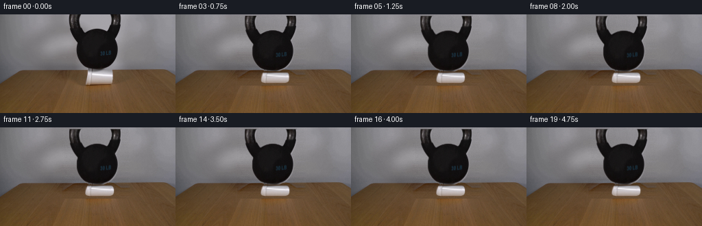
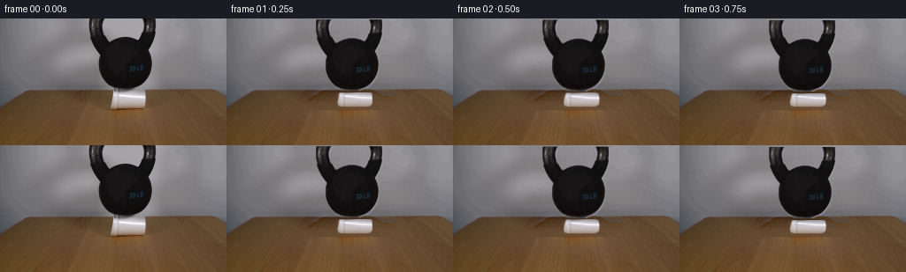
展开代码变化
--- 上一保存版本
+++ 本次保存版本
@@ -0,0 +1,250 @@
+from pathlib import Path
+
+import cv2
+import numpy as np
+from PIL import Image, ImageDraw
+from scipy.ndimage import gaussian_filter
+
+import artifact_io
+
+
+CASE_DIR = Path(__file__).resolve().parent
+WIDTH = 256
+HEIGHT = 144
+FRAMES = 20
+FPS = 4
+
+
+def _filled_component(mask, x0, x1, y0, y1):
+ """Return the largest filled connected component inside a search window."""
+ search = np.zeros_like(mask, dtype=np.uint8)
+ search[y0:y1, x0:x1] = mask[y0:y1, x0:x1]
+ count, labels, stats, _ = cv2.connectedComponentsWithStats(search, 8)
+ if count <= 1:
+ return search.astype(bool)
+ index = 1 + int(np.argmax(stats[1:, cv2.CC_STAT_AREA]))
+ component = (labels == index).astype(np.uint8)
+ component = cv2.morphologyEx(component, cv2.MORPH_CLOSE, np.ones((3, 3), np.uint8))
+ return component.astype(bool)
+
+
+def _feather(mask, radius=0.7):
+ alpha = mask.astype(np.float32)
+ alpha = gaussian_filter(alpha, radius)
+ return np.clip(alpha, 0.0, 1.0)
+
+
+def _background_plate(image, keep_mask):
+ """Reconstruct the wall and table behind the two foreground objects."""
+ plate = image.astype(np.float32).copy()
+ fine = image.astype(np.float32) - gaussian_filter(
+ image.astype(np.float32), sigma=(3.0, 3.0, 0.0)
+ )
+
+ x0, x1 = 90, 190
+ for y in range(0, 104):
+ left = image[y, x0].astype(np.float32)
+ right = image[y, x1].astype(np.float32)
+ for x in range(x0, x1):
+ t = (x - x0) / float(x1 - x0)
+ base = left * (1.0 - t) + right * t
+ source_x = x - 78 if x < 140 else x + 78
+ source_x = int(np.clip(source_x, 1, WIDTH - 2))
+ # The copied high-frequency component keeps the wall mottling and
+ # the tabletop grain from becoming an unrealistically smooth patch.
+ base = base + 0.72 * fine[y, source_x]
+ plate[y, x] = base
+
+ # Blend the reconstructed strip into its neighbours to avoid vertical seams.
+ for y in range(0, 104):
+ for x in range(4):
+ t = (x + 1) / 5.0
+ plate[y, x0 + x] = plate[y, x0 + x] * t + image[y, x0 + x] * (1.0 - t)
+ plate[y, x1 - x] = plate[y, x1 - x] * t + image[y, x1 - x] * (1.0 - t)
+
+ # Preserve the untouched image everywhere outside the reconstruction band.
+ plate[0:104, 0:x0] = image[0:104, 0:x0]
+ plate[0:104, x1:WIDTH] = image[0:104, x1:WIDTH]
+ plate[104:HEIGHT] = image[104:HEIGHT]
+
+ # Low-amplitude grain prevents the generated central plate from looking flat.
+ rng = np.random.default_rng(191)
+ grain = rng.normal(0.0, 1.35, (104, x1 - x0, 1))
+ plate[0:104, x0:x1] += grain
+
+ # Keep the original image exactly outside the small reveal area used below.
+ reveal = np.zeros((HEIGHT, WIDTH), dtype=bool)
+ reveal[0:104, x0:x1] = True
+ plate[~reveal] = image[~reveal]
+ return np.clip(plate, 0, 255).astype(np.uint8)
+
+
+def _make_cup_alpha():
+ """Build an antialiased foam-cup silhouette from the observed rim/body."""
+ scale = 4
+ mask = Image.new("L", (WIDTH * scale, HEIGHT * scale), 0)
+ draw = ImageDraw.Draw(mask)
+ polygon = [
+ (129, 82), (161, 82), (163, 83), (164, 85), (164, 94),
+ (164, 97), (162, 99), (160, 100), (130, 100), (127, 99),
+ (126, 97), (126, 86), (127, 83),
+ ]
+ draw.polygon([(x * scale, y * scale) for x, y in polygon], fill=255)
+ alpha = np.asarray(mask.resize((WIDTH, HEIGHT), Image.Resampling.LANCZOS), dtype=np.float32)
+ return alpha / 255.0
+
+
+def _rgba_layer(image, alpha):
+ rgb = image.astype(np.float32)
+ return np.dstack((rgb, alpha.astype(np.float32) * 255.0))
+
+
+def _warp_rgba(layer, matrix, size=(WIDTH, HEIGHT)):
+ warped = cv2.warpAffine(
+ layer,
+ matrix,
+ size,
+ flags=cv2.INTER_LINEAR,
+ borderMode=cv2.BORDER_CONSTANT,
+ borderValue=(0, 0, 0, 0),
+ )
+ return warped
+
+
+def _composite(base, layer):
+ rgb = layer[:, :, :3].astype(np.float32)
+ alpha = np.clip(layer[:, :, 3:4].astype(np.float32) / 255.0, 0.0, 1.0)
+ out = base.astype(np.float32) * (1.0 - alpha) + rgb * alpha
+ return out
+
+
+def _cup_warp(image, alpha, sink, bulge, wobble):
+ """Squash the cup from its rim while keeping its base planted."""
+ cup_rgba = _rgba_layer(image, alpha)
+ source_h = 18.0
+ top = 82.0 + sink
+ visible_h = max(11.5, 100.0 - top)
+ scale_y = source_h / visible_h
+
+ yy, xx = np.mgrid[0:HEIGHT, 0:WIDTH].astype(np.float32)
+ output_y = yy
+ output_x = xx
+
+ in_cup = (output_y >= top) & (output_y <= 100.0)
+ src_y = np.full_like(output_y, -1.0)
+ src_y[in_cup] = 82.0 + (output_y[in_cup] - top) * scale_y
+
+ # Foam bulges most just under the rim and is pinned at the tabletop.
+ q = np.clip((100.0 - output_y) / np.maximum(visible_h, 1.0), 0.0, 1.0)
+ shape = np.sin(np.pi * np.clip(q, 0.0, 1.0)) ** 0.65
+ local_bulge = 1.0 + bulge * shape
+ local_bulge += wobble * (0.25 + 0.75 * q) * np.sin((output_y - top) * 0.72)
+ src_x = 145.2 + (output_x - 145.2) / np.maximum(local_bulge, 0.65)
+ src_x[~in_cup] = -1.0
+
+ map_x = src_x.astype(np.float32)
+ map_y = src_y.astype(np.float32)
+ warped = cv2.remap(
+ cup_rgba,
+ map_x,
+ map_y,
+ interpolation=cv2.INTER_LINEAR,
+ borderMode=cv2.BORDER_CONSTANT,
+ borderValue=(0, 0, 0, 0),
+ )
+ return warped
+
+
+def _add_contact_shadow(base, sink, strength):
+ """Place a soft contact shade at the kettlebell/cup interface."""
+ if strength <= 0:
+ return base
+ yy, xx = np.mgrid[0:HEIGHT, 0:WIDTH].astype(np.float32)
+ cy = 81.0 + sink
+ shadow = np.exp(-((xx - 141.0) / 23.0) ** 2 - ((yy - cy) / 3.1) ** 2)
+ shadow *= (np.abs(xx - 141.0) < 29.0)
+ factor = 1.0 - 0.20 * strength * shadow[:, :, None]
+ return base * factor
+
+
+def _add_cup_crease(base, sink, strength):
+ """Add a restrained foam fold as the cup takes the kettlebell's load."""
+ if strength <= 0:
+ return base
+ yy, xx = np.mgrid[0:HEIGHT, 0:WIDTH].astype(np.float32)
+ curve_y = 88.5 + 0.28 * sink + 0.7 * np.sin((xx - 128.0) * 0.20)
+ inside = (xx >= 130.0) & (xx <= 161.0) & (yy >= 85.0 + sink) & (yy <= 97.0)
+ line = np.exp(-((yy - curve_y) / 0.72) ** 2) * inside
+ factor = 1.0 - 0.085 * strength * line[:, :, None]
+ return base * factor
+
+
+def _settle_curve(frame):
+ t = frame / float(FPS)
+ if frame == 0:
+ return 0.0, 0.0, 0.0
+ # A rapid initial load followed by a small damped bounce.
+ sink = 2.55 * (1.0 - np.exp(-2.15 * t))
+ sink += 0.20 * np.exp(-2.4 * t) * np.sin(9.0 * t)
+ sink = max(0.0, sink)
+ bulge = 0.115 * (1.0 - np.exp(-2.0 * t))
+ wobble = 0.022 * np.exp(-2.3 * t) * np.sin(9.0 * t)
+ return float(sink), float(bulge), float(wobble)
+
+
+def generate():
+ first = np.asarray(Image.open(CASE_DIR / "first_frame.png").convert("RGB"), dtype=np.uint8)
+ assert first.shape == (HEIGHT, WIDTH, 3)
+
+ gray = cv2.cvtColor(first, cv2.COLOR_RGB2GRAY)
+ kettle_raw = (gray < 92).astype(np.uint8)
+ kettle_component = _filled_component(kettle_raw, 96, 181, 0, 81)
+ kettle_mask = cv2.dilate(kettle_component.astype(np.uint8), np.ones((2, 2), np.uint8))
+ kettle_mask = kettle_mask.astype(bool)
+ kettle_alpha = _feather(kettle_mask, 0.55)
+ kettle_alpha *= (np.indices((HEIGHT, WIDTH))[0] <= 80)
+
+ cup_alpha = _make_cup_alpha()
+ # Keep the original cup pixels inside the hand-built silhouette.
+ cup_alpha *= (gray > 68).astype(np.float32)
+
+ keep = np.zeros((HEIGHT, WIDTH), dtype=bool)
+ keep |= kettle_mask
+ keep |= cup_alpha > 0.02
+ plate = _background_plate(first, keep)
+
+ kettle_layer = _rgba_layer(first, kettle_alpha)
+ frames = np.empty((FRAMES, HEIGHT, WIDTH, 3), dtype=np.uint8)
+
+ for index in range(FRAMES):
+ if index == 0:
+ frames[index] = first
+ continue
+
+ sink, bulge, wobble = _settle_curve(index)
+ shift_x = 0.10 * np.sin(index * 0.43) * min(1.0, sink)
+ shift_y = sink
+
+ base = plate.astype(np.float32)
+ cup = _cup_warp(first, cup_alpha, sink, bulge, wobble)
+ base = _composite(base, cup)
+ base = _add_contact_shadow(base, sink, min(1.0, sink / 2.0))
+ base = _add_cup_crease(base, sink, min(1.0, sink / 2.2))
+
+ matrix = np.array([[1.0, 0.0, shift_x], [0.0, 1.0, shift_y]], dtype=np.float32)
+ kettle = _warp_rgba(kettle_layer, matrix)
+ base = _composite(base, kettle)
+
+ # A tiny, mostly fixed-sensor grain is applied only to the newly moving
+ # frames; frame zero remains byte-for-byte identical to the input.
+ rng = np.random.default_rng(1900 + index)
+ grain = rng.normal(0.0, 0.55, (HEIGHT, WIDTH, 1))
+ base += grain
+ frames[index] = np.clip(base, 0, 255).astype(np.uint8)
+
+ return frames
+
+
+if __name__ == "__main__":
+ video = generate()
+ artifact_io.save(video, CASE_DIR)
候选 02播放与检查图
点击播放 · 原生 RGB 像素
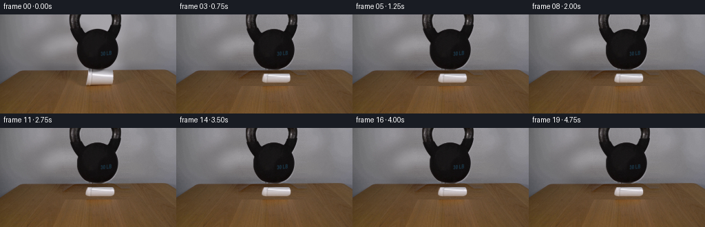
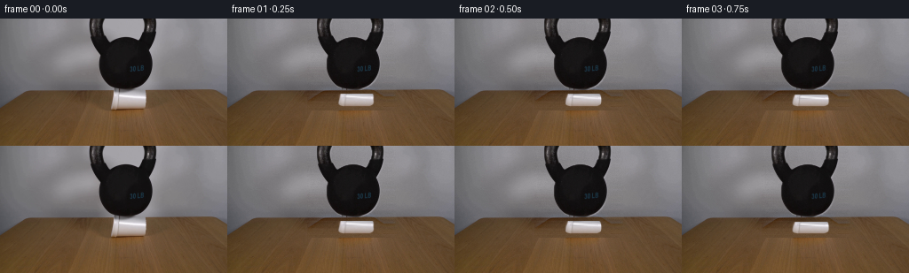
展开代码变化
--- 上一保存版本
+++ 本次保存版本
@@ -122,20 +122,21 @@
"""Squash the cup from its rim while keeping its base planted."""
cup_rgba = _rgba_layer(image, alpha)
source_h = 18.0
- top = 82.0 + sink
- visible_h = max(11.5, 100.0 - top)
+ top = 83.0 + sink
+ bottom = 99.5 + 0.14 * sink
+ visible_h = max(12.5, bottom - top)
scale_y = source_h / visible_h
yy, xx = np.mgrid[0:HEIGHT, 0:WIDTH].astype(np.float32)
output_y = yy
output_x = xx
- in_cup = (output_y >= top) & (output_y <= 100.0)
+ in_cup = (output_y >= top) & (output_y <= bottom)
src_y = np.full_like(output_y, -1.0)
- src_y[in_cup] = 82.0 + (output_y[in_cup] - top) * scale_y
+ src_y[in_cup] = 83.0 + (output_y[in_cup] - top) * scale_y
# Foam bulges most just under the rim and is pinned at the tabletop.
- q = np.clip((100.0 - output_y) / np.maximum(visible_h, 1.0), 0.0, 1.0)
+ q = np.clip((bottom - output_y) / np.maximum(visible_h, 1.0), 0.0, 1.0)
shape = np.sin(np.pi * np.clip(q, 0.0, 1.0)) ** 0.65
local_bulge = 1.0 + bulge * shape
local_bulge += wobble * (0.25 + 0.75 * q) * np.sin((output_y - top) * 0.72)
@@ -231,7 +232,7 @@
base = _add_contact_shadow(base, sink, min(1.0, sink / 2.0))
base = _add_cup_crease(base, sink, min(1.0, sink / 2.2))
- matrix = np.array([[1.0, 0.0, shift_x], [0.0, 1.0, shift_y]], dtype=np.float32)
+ matrix = np.array([[1.0, 0.0, shift_x], [0.0, 1.0, 0.0]], dtype=np.float32)
kettle = _warp_rgba(kettle_layer, matrix)
base = _composite(base, kettle)
候选 03播放与检查图
点击播放 · 原生 RGB 像素
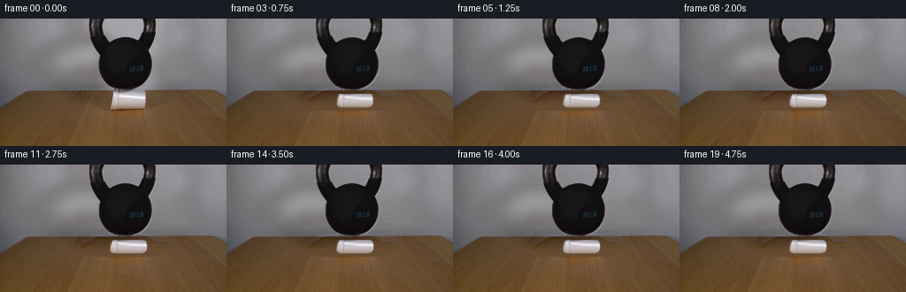
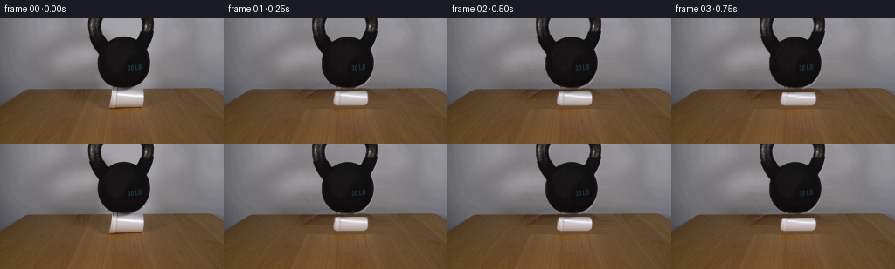
展开代码变化
--- 上一保存版本
+++ 本次保存版本
@@ -122,8 +122,8 @@
"""Squash the cup from its rim while keeping its base planted."""
cup_rgba = _rgba_layer(image, alpha)
source_h = 18.0
- top = 83.0 + sink
- bottom = 99.5 + 0.14 * sink
+ top = 82.0 + sink
+ bottom = 100.0 + 0.08 * sink
visible_h = max(12.5, bottom - top)
scale_y = source_h / visible_h
@@ -133,7 +133,7 @@
in_cup = (output_y >= top) & (output_y <= bottom)
src_y = np.full_like(output_y, -1.0)
- src_y[in_cup] = 83.0 + (output_y[in_cup] - top) * scale_y
+ src_y[in_cup] = 82.0 + (output_y[in_cup] - top) * scale_y
# Foam bulges most just under the rim and is pinned at the tabletop.
q = np.clip((bottom - output_y) / np.maximum(visible_h, 1.0), 0.0, 1.0)
候选 04播放与检查图
点击播放 · 原生 RGB 像素
展开代码变化
--- 上一保存版本
+++ 本次保存版本
@@ -48,19 +48,19 @@
for x in range(x0, x1):
t = (x - x0) / float(x1 - x0)
base = left * (1.0 - t) + right * t
- source_x = x - 78 if x < 140 else x + 78
+ if x < x0 + 12:
+ source_x = x - 31
+ elif x >= x1 - 12:
+ source_x = x + 31
+ elif y < 81:
+ source_x = x - 78 if x < 140 else x + 78
+ else:
+ source_x = x - 52 if x < 145 else x + 52
source_x = int(np.clip(source_x, 1, WIDTH - 2))
# The copied high-frequency component keeps the wall mottling and
# the tabletop grain from becoming an unrealistically smooth patch.
base = base + 0.72 * fine[y, source_x]
plate[y, x] = base
-
- # Blend the reconstructed strip into its neighbours to avoid vertical seams.
- for y in range(0, 104):
- for x in range(4):
- t = (x + 1) / 5.0
- plate[y, x0 + x] = plate[y, x0 + x] * t + image[y, x0 + x] * (1.0 - t)
- plate[y, x1 - x] = plate[y, x1 - x] * t + image[y, x1 - x] * (1.0 - t)
# Preserve the untouched image everywhere outside the reconstruction band.
plate[0:104, 0:x0] = image[0:104, 0:x0]
@@ -122,7 +122,7 @@
"""Squash the cup from its rim while keeping its base planted."""
cup_rgba = _rgba_layer(image, alpha)
source_h = 18.0
- top = 82.0 + sink
+ top = 82.0 + 0.62 * sink
bottom = 100.0 + 0.08 * sink
visible_h = max(12.5, bottom - top)
scale_y = source_h / visible_h
@@ -229,8 +229,8 @@
base = plate.astype(np.float32)
cup = _cup_warp(first, cup_alpha, sink, bulge, wobble)
base = _composite(base, cup)
- base = _add_contact_shadow(base, sink, min(1.0, sink / 2.0))
- base = _add_cup_crease(base, sink, min(1.0, sink / 2.2))
+ base = _add_contact_shadow(base, sink, 0.48 * min(1.0, sink / 2.0))
+ base = _add_cup_crease(base, sink, 0.55 * min(1.0, sink / 2.2))
matrix = np.array([[1.0, 0.0, shift_x], [0.0, 1.0, 0.0]], dtype=np.float32)
kettle = _warp_rgba(kettle_layer, matrix)
候选 05播放与检查图
候选 06播放与检查图
点击播放 · 原生 RGB 像素

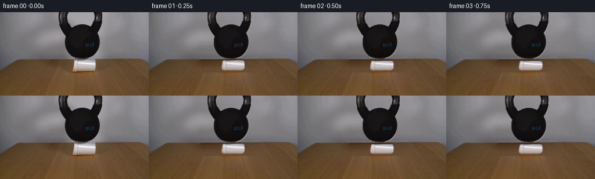
展开代码变化
--- 上一保存版本
+++ 本次保存版本
@@ -41,17 +41,17 @@
image.astype(np.float32), sigma=(3.0, 3.0, 0.0)
)
- x0, x1 = 90, 190
+ x0, x1 = 100, 182
for y in range(0, 104):
left = image[y, x0].astype(np.float32)
right = image[y, x1].astype(np.float32)
for x in range(x0, x1):
t = (x - x0) / float(x1 - x0)
base = left * (1.0 - t) + right * t
- if x < x0 + 12:
- source_x = x - 31
- elif x >= x1 - 12:
- source_x = x + 31
+ if x < x0 + 8:
+ source_x = x - 27
+ elif x >= x1 - 8:
+ source_x = x + 27
elif y < 81:
source_x = x - 78 if x < 140 else x + 78
else:
@@ -77,6 +77,27 @@
reveal[0:104, x0:x1] = True
plate[~reveal] = image[~reveal]
return np.clip(plate, 0, 255).astype(np.uint8)
+
+
+def _restore_cup_edges(base, image, sink):
+ """Keep the cup's sidewalls crisp while its surface is being warped."""
+ out = base.copy()
+ top = 82.0 + 0.62 * sink
+ bottom = 100.0 + 0.08 * sink
+ yy = np.arange(HEIGHT, dtype=np.float32)[:, None]
+ source_y = np.rint(82.0 + (yy - top) * (18.0 / max(12.5, bottom - top))).astype(int)
+ valid = (yy >= np.ceil(top)) & (yy <= np.floor(bottom))
+
+ for x in (125, 126, 127, 163, 164, 165):
+ if x not in (126, 164):
+ continue
+ src_x = x
+ for y in range(HEIGHT):
+ if not valid[y, 0]:
+ continue
+ sy = int(np.clip(source_y[y, 0], 82, 99))
+ out[y, x] = image[sy, src_x]
+ return out
def _make_cup_alpha():
@@ -229,6 +250,7 @@
base = plate.astype(np.float32)
cup = _cup_warp(first, cup_alpha, sink, bulge, wobble)
base = _composite(base, cup)
+ base = _restore_cup_edges(base, first, sink)
base = _add_contact_shadow(base, sink, 0.48 * min(1.0, sink / 2.0))
base = _add_cup_crease(base, sink, 0.55 * min(1.0, sink / 2.2))
候选 07播放与检查图
候选 08播放与检查图
点击播放 · 原生 RGB 像素

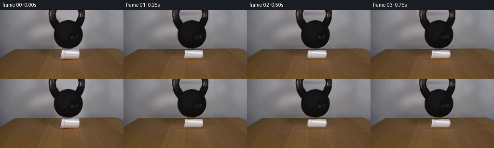
展开代码变化
--- 上一保存版本
+++ 本次保存版本
@@ -100,6 +100,26 @@
return out
+def _restore_cup_rim(base, image, sink):
+ """Restore the visible lip pixels lost by the first vertical squeeze."""
+ if sink < 0.25:
+ return base
+ out = base.copy()
+ target_y = int(round(82.0 + 0.62 * sink))
+ if target_y < 83:
+ return out
+ for y in range(target_y, min(target_y + 3, 100)):
+ if y == target_y:
+ src_y = 82
+ elif y == target_y + 1:
+ src_y = 84
+ else:
+ src_y = 85
+ for x in range(128, 164):
+ out[y, x] = image[src_y, x]
+ return out
+
+
def _make_cup_alpha():
"""Build an antialiased foam-cup silhouette from the observed rim/body."""
scale = 4
@@ -251,6 +271,7 @@
cup = _cup_warp(first, cup_alpha, sink, bulge, wobble)
base = _composite(base, cup)
base = _restore_cup_edges(base, first, sink)
+ base = _restore_cup_rim(base, first, sink)
base = _add_contact_shadow(base, sink, 0.48 * min(1.0, sink / 2.0))
base = _add_cup_crease(base, sink, 0.55 * min(1.0, sink / 2.2))

候选 10播放与检查图
点击播放 · 原生 RGB 像素
展开代码变化
--- 上一保存版本
+++ 本次保存版本
@@ -102,19 +102,17 @@
def _restore_cup_rim(base, image, sink):
"""Restore the visible lip pixels lost by the first vertical squeeze."""
- if sink < 0.25:
- return base
out = base.copy()
target_y = int(round(82.0 + 0.62 * sink))
- if target_y < 83:
+ if target_y < 82:
return out
for y in range(target_y, min(target_y + 3, 100)):
if y == target_y:
src_y = 82
elif y == target_y + 1:
+ src_y = 83
+ else:
src_y = 84
- else:
- src_y = 85
for x in range(128, 164):
out[y, x] = image[src_y, x]
return out
候选 12播放与检查图
点击播放 · 原生 RGB 像素

展开代码变化
--- 上一保存版本
+++ 本次保存版本
@@ -41,21 +41,21 @@
image.astype(np.float32), sigma=(3.0, 3.0, 0.0)
)
- x0, x1 = 100, 182
+ x0, x1 = 98, 181
for y in range(0, 104):
left = image[y, x0].astype(np.float32)
right = image[y, x1].astype(np.float32)
for x in range(x0, x1):
t = (x - x0) / float(x1 - x0)
base = left * (1.0 - t) + right * t
- if x < x0 + 8:
- source_x = x - 27
- elif x >= x1 - 8:
- source_x = x + 27
+ if x < x0 + 10:
+ source_x = x - 30
+ elif x >= x1 - 10:
+ source_x = x + 30
elif y < 81:
source_x = x - 78 if x < 140 else x + 78
else:
- source_x = x - 52 if x < 145 else x + 52
+ source_x = x - 57 if x < 143 else x + 57
source_x = int(np.clip(source_x, 1, WIDTH - 2))
# The copied high-frequency component keeps the wall mottling and
# the tabletop grain from becoming an unrealistically smooth patch.
候选 13播放与检查图
候选 14播放与检查图
点击播放 · 原生 RGB 像素
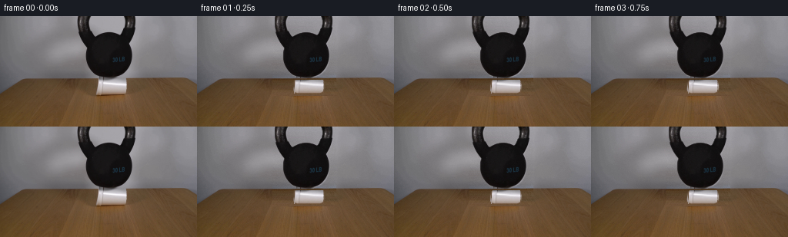
展开代码变化
--- 上一保存版本
+++ 本次保存版本
@@ -41,7 +41,7 @@
image.astype(np.float32), sigma=(3.0, 3.0, 0.0)
)
- x0, x1 = 98, 181
+ x0, x1 = 101, 181
for y in range(0, 104):
left = image[y, x0].astype(np.float32)
right = image[y, x1].astype(np.float32)
候选 15播放与检查图
候选 16播放与检查图
点击播放 · 原生 RGB 像素
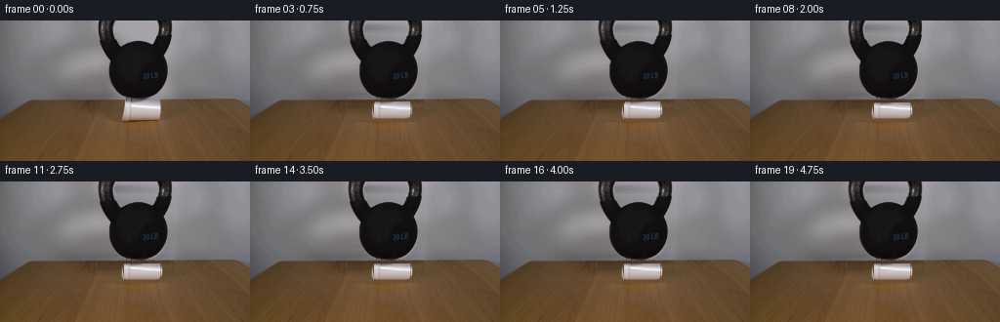
展开代码变化
--- 上一保存版本
+++ 本次保存版本
@@ -41,7 +41,7 @@
image.astype(np.float32), sigma=(3.0, 3.0, 0.0)
)
- x0, x1 = 101, 181
+ x0, x1 = 100, 178
for y in range(0, 104):
left = image[y, x0].astype(np.float32)
right = image[y, x1].astype(np.float32)
@@ -53,7 +53,7 @@
elif x >= x1 - 10:
source_x = x + 30
elif y < 81:
- source_x = x - 78 if x < 140 else x + 78
+ source_x = x - 82 if x < 139 else x + 82
else:
source_x = x - 57 if x < 143 else x + 57
source_x = int(np.clip(source_x, 1, WIDTH - 2))
候选 17播放与检查图
点击播放 · 原生 RGB 像素
展开代码变化
--- 上一保存版本
+++ 本次保存版本
@@ -38,7 +38,7 @@
"""Reconstruct the wall and table behind the two foreground objects."""
plate = image.astype(np.float32).copy()
fine = image.astype(np.float32) - gaussian_filter(
- image.astype(np.float32), sigma=(3.0, 3.0, 0.0)
+ image.astype(np.float32), sigma=(1.0, 1.0, 0.0)
)
x0, x1 = 100, 178
候选 18播放与检查图
点击播放 · 原生 RGB 像素

展开代码变化
--- 上一保存版本
+++ 本次保存版本
@@ -40,6 +40,41 @@
fine = image.astype(np.float32) - gaussian_filter(
image.astype(np.float32), sigma=(1.0, 1.0, 0.0)
)
+
+ wall_mask = np.zeros((HEIGHT, WIDTH), dtype=bool)
+ wall_mask[0:81, :] = True
+ wall_mask[0:81, 99:180] = False
+ wall_y, wall_x = np.where(wall_mask)
+ design = np.column_stack(
+ (
+ np.ones(len(wall_x)),
+ wall_x,
+ wall_x ** 2,
+ wall_y,
+ wall_y ** 2,
+ wall_x * wall_y,
+ )
+ ).astype(np.float32)
+ wall_fit = np.empty((81, WIDTH, 3), dtype=np.float32)
+ grid_x, grid_y = np.meshgrid(
+ np.arange(WIDTH, dtype=np.float32), np.arange(81, dtype=np.float32)
+ )
+ grid_design = np.stack(
+ (
+ np.ones_like(grid_x),
+ grid_x,
+ grid_x ** 2,
+ grid_y,
+ grid_y ** 2,
+ grid_x * grid_y,
+ ),
+ axis=-1,
+ )
+ for channel in range(3):
+ coefficients = np.linalg.lstsq(
+ design, image[wall_y, wall_x, channel].astype(np.float32), rcond=None
+ )[0]
+ wall_fit[:, :, channel] = grid_design @ coefficients
x0, x1 = 100, 178
for y in range(0, 104):
@@ -53,6 +88,7 @@
elif x >= x1 - 10:
source_x = x + 30
elif y < 81:
+ base = 0.93 * base + 0.07 * wall_fit[y, x]
source_x = x - 82 if x < 139 else x + 82
else:
source_x = x - 57 if x < 143 else x + 57
候选 19播放与检查图
点击播放 · 原生 RGB 像素
展开代码变化
--- 上一保存版本
+++ 本次保存版本
@@ -89,7 +89,7 @@
source_x = x + 30
elif y < 81:
base = 0.93 * base + 0.07 * wall_fit[y, x]
- source_x = x - 82 if x < 139 else x + 82
+ source_x = x - 45 if x < 139 else x + 45
else:
source_x = x - 57 if x < 143 else x + 57
source_x = int(np.clip(source_x, 1, WIDTH - 2))
候选 20播放与检查图
候选 21播放与检查图
点击播放 · 原生 RGB 像素

展开代码变化
--- 上一保存版本
+++ 本次保存版本
@@ -36,83 +36,15 @@
def _background_plate(image, keep_mask):
"""Reconstruct the wall and table behind the two foreground objects."""
- plate = image.astype(np.float32).copy()
- fine = image.astype(np.float32) - gaussian_filter(
- image.astype(np.float32), sigma=(1.0, 1.0, 0.0)
+ foreground = (keep_mask.astype(np.uint8) * 255)
+ foreground = cv2.dilate(foreground, np.ones((3, 3), np.uint8))
+ plate = cv2.inpaint(
+ image.astype(np.uint8),
+ foreground,
+ 3.2,
+ cv2.INPAINT_TELEA,
)
-
- wall_mask = np.zeros((HEIGHT, WIDTH), dtype=bool)
- wall_mask[0:81, :] = True
- wall_mask[0:81, 99:180] = False
- wall_y, wall_x = np.where(wall_mask)
- design = np.column_stack(
- (
- np.ones(len(wall_x)),
- wall_x,
- wall_x ** 2,
- wall_y,
- wall_y ** 2,
- wall_x * wall_y,
- )
- ).astype(np.float32)
- wall_fit = np.empty((81, WIDTH, 3), dtype=np.float32)
- grid_x, grid_y = np.meshgrid(
- np.arange(WIDTH, dtype=np.float32), np.arange(81, dtype=np.float32)
- )
- grid_design = np.stack(
- (
- np.ones_like(grid_x),
- grid_x,
- grid_x ** 2,
- grid_y,
- grid_y ** 2,
- grid_x * grid_y,
- ),
- axis=-1,
- )
- for channel in range(3):
- coefficients = np.linalg.lstsq(
- design, image[wall_y, wall_x, channel].astype(np.float32), rcond=None
- )[0]
- wall_fit[:, :, channel] = grid_design @ coefficients
-
- x0, x1 = 100, 178
- for y in range(0, 104):
- left = image[y, x0].astype(np.float32)
- right = image[y, x1].astype(np.float32)
- for x in range(x0, x1):
- t = (x - x0) / float(x1 - x0)
- base = left * (1.0 - t) + right * t
- if x < x0 + 10:
- source_x = x - 30
- elif x >= x1 - 10:
- source_x = x + 30
- elif y < 81:
- base = 0.93 * base + 0.07 * wall_fit[y, x]
- source_x = x - 45 if x < 139 else x + 45
- else:
- source_x = x - 57 if x < 143 else x + 57
- source_x = int(np.clip(source_x, 1, WIDTH - 2))
- # The copied high-frequency component keeps the wall mottling and
- # the tabletop grain from becoming an unrealistically smooth patch.
- base = base + 0.72 * fine[y, source_x]
- plate[y, x] = base
-
- # Preserve the untouched image everywhere outside the reconstruction band.
- plate[0:104, 0:x0] = image[0:104, 0:x0]
- plate[0:104, x1:WIDTH] = image[0:104, x1:WIDTH]
- plate[104:HEIGHT] = image[104:HEIGHT]
-
- # Low-amplitude grain prevents the generated central plate from looking flat.
- rng = np.random.default_rng(191)
- grain = rng.normal(0.0, 1.35, (104, x1 - x0, 1))
- plate[0:104, x0:x1] += grain
-
- # Keep the original image exactly outside the small reveal area used below.
- reveal = np.zeros((HEIGHT, WIDTH), dtype=bool)
- reveal[0:104, x0:x1] = True
- plate[~reveal] = image[~reveal]
- return np.clip(plate, 0, 255).astype(np.uint8)
+ return plate
def _restore_cup_edges(base, image, sink):
候选 22播放与检查图
点击播放 · 原生 RGB 像素
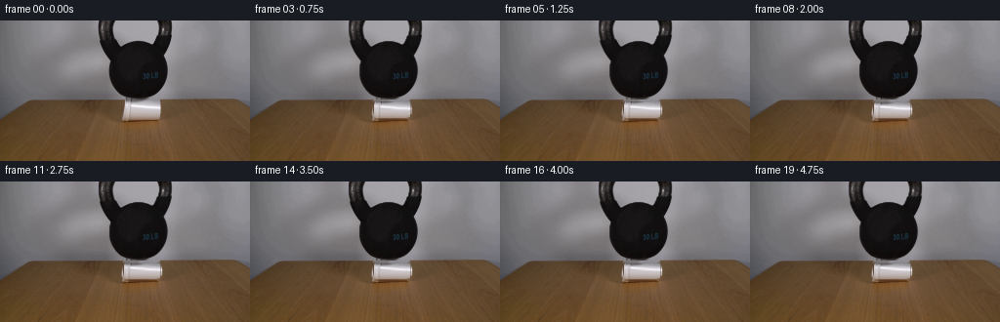
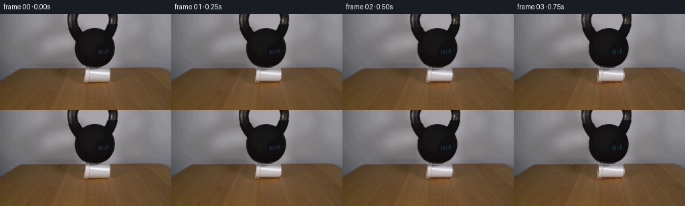
展开代码变化
--- 上一保存版本
+++ 本次保存版本
@@ -86,6 +86,14 @@
return out
+def _preserve_cup_foot(base, image):
+ """Keep the one-pixel foam foot and its tabletop contact exact."""
+ out = base.copy()
+ for y in (100, 101, 102, 103, 104, 105):
+ out[y, 125:165] = image[y, 125:165]
+ return out
+
+
def _make_cup_alpha():
"""Build an antialiased foam-cup silhouette from the observed rim/body."""
scale = 4
@@ -240,6 +248,7 @@
base = _restore_cup_rim(base, first, sink)
base = _add_contact_shadow(base, sink, 0.48 * min(1.0, sink / 2.0))
base = _add_cup_crease(base, sink, 0.55 * min(1.0, sink / 2.2))
+ base = _preserve_cup_foot(base, first)
matrix = np.array([[1.0, 0.0, shift_x], [0.0, 1.0, 0.0]], dtype=np.float32)
kettle = _warp_rgba(kettle_layer, matrix)
候选 23播放与检查图
可观测工具轨迹
实际执行的命令与返回图片。
命令 1exit 0
/bin/bash -c "pwd && rg --files -g 'prompt.txt' -g 'GENERATION_RULES.md' -g 'first_frame.png' -g '"'!*.pyc'"'"
命令 2exit 0
/bin/bash -c "find . -maxdepth 2 -type f -printf '%p %s bytes\\n' | sort"
命令 3exit 0
/bin/bash -c 'cat prompt.txt'
命令 4exit 0
/bin/bash -c 'cat GENERATION_RULES.md'
命令 5exit 0
/bin/bash -c "sed -n '1,240p' artifact_io.py && sed -n '1,240p' player_template.html"
命令 6exit 0
/bin/bash -c "python - <<'PY'
from PIL import Image
import numpy as np
im=Image.open('first_frame.png').convert('RGB')
a=np.array(im)
print('shape',a.shape,'dtype',a.dtype)
print('min/max/mean',a.min(axis=(0,1)),a.max(axis=(0,1)),a.mean(axis=(0,1)).round(1))
# global mean and coarse color grid
chars=' .:-=+*#%@'
g=np.dot(a,[0.299,0.587,0.114])
# normalized contrast
lo,hi=np.percentile(g,[1,99])
for y in range(0,a.shape[0],3):
line=''
for x in range(0,a.shape[1],4):
v=g[y:y+3,x:x+4].mean()
i=int(np.clip((v-lo)/(hi-lo+1e-6),0,1)*(len(chars)-1))
line+=chars[i]
print(line)
PY"命令 7exit 0
/bin/bash -c "python - <<'PY'
from PIL import Image
import numpy as np
from collections import Counter
im=Image.open('first_frame.png').convert('RGB'); a=np.array(im)
print(Image.open('first_frame.png').mode, Image.open('first_frame.png').size)
# exact common colors
c=Counter(map(tuple,a.reshape(-1,3)))
for col,n in c.most_common(30): print(col,n)
PY"命令 8exit 0
/bin/bash -c "python - <<'PY'
try:
import cv2; print('cv2',cv2.__version__)
except Exception as e: print('no cv2',e)
try:
import scipy; print('scipy',scipy.__version__)
except Exception as e: print('no scipy',e)
try:
import skimage; print('skimage',skimage.__version__)
except Exception as e: print('no skimage',e)
PY"命令 9exit 0
/bin/bash -c "python - <<'PY'
from PIL import Image
import numpy as np
a=np.array(Image.open('first_frame.png').convert('RGB')).astype(float)
# print 16x9 block means
for y in range(9):
row=[]
for x in range(16):
b=a[y*16:(y+1)*16,x*16:(x+1)*16].mean((0,1)).astype(int)
row.append('%02x%02x%02x'%tuple(b))
print(y, ' '.join(row))
PY"命令 10exit 0
/bin/bash -c "python - <<'PY'
from PIL import Image
import numpy as np
import cv2
im=Image.open('first_frame.png').convert('RGB'); a=np.array(im)
h,w=a.shape[:2]
# Canny edge density blocks
g=cv2.cvtColor(a,cv2.COLOR_RGB2GRAY)
e=cv2.Canny(g,40,100)
# 32x18 blocks of 8x8, print if edges
chars=' .:-=+*#%@'
print('edge map')
for y in range(0,h,4):
line=''
for x in range(0,w,4):
v=e[y:y+4,x:x+4].mean()/255
line+=chars[min(9,int(v*10))]
print(line)
# Lab color segmentation classes per 4x4 using nearest centers manually
print('RGB sampled grid 8x8')
for y in range(0,h,8):
print(f'{y:03d}', end=' ')
for x in range(0,w,8):
b=a[y:y+8,x:x+8].mean((0,1)).astype(int)
r,g,bb=b
if max(b)-min(b)<15 and r>180: c='W'
elif max(b)-min(b)<15 and r>90: c='g'
elif max(b)-min(b)<15 and r>40: c='d'
elif max(b)-min(b)<15: c='K'
elif r>g*1.35 and g>bb*1.15: c='B' # brown
elif r>g*1.15 and g>bb*1.05: c='b'
elif g>r*1.15: c='G'
else: c='?'
print(c,end='')
print()
PY"命令 11exit 0
/bin/bash -c "python - <<'PY'
from PIL import Image
import numpy as np
import cv2
a=np.array(Image.open('first_frame.png').convert('RGB'))
g=cv2.cvtColor(a,cv2.COLOR_RGB2GRAY)
# binary row/col segmentation stats
for y in [70,75,78,80,82,85,88,90,92,95,98,100,105,110,115,120,125,130,135,140]:
b=a[y]
print('y',y,'mean',b.mean(0).round(0),'darkest',b.mean(1).argmin(),'brightest',b.mean(1).argmax())
# largest connected edge contours
e=cv2.Canny(g,30,90)
contours,_=cv2.findContours(e,cv2.RETR_LIST,cv2.CHAIN_APPROX_SIMPLE)
arr=[]
for c in contours:
x,y,w,h=cv2.boundingRect(c); ar=cv2.contourArea(c)
if ar>5: arr.append((ar,x,y,w,h))
for r in sorted(arr,reverse=True)[:50]: print(r)
PY"命令 12exit 0
/bin/bash -c "python - <<'PY'
from PIL import Image
im=Image.open('first_frame.png').convert('RGB')
im.resize((1024,576),Image.Resampling.NEAREST).save('.tmp/first_big.png')
PY"命令 13exit 0
/bin/bash -c "python - <<'PY'
from PIL import Image
import numpy as np, cv2
a=np.array(Image.open('first_frame.png').convert('RGB'))
g=cv2.cvtColor(a,cv2.COLOR_RGB2GRAY)
# char map top 112 rows at 2x2, dark mask and color classes
chars=' .:-=+*#%@'
# custom: dark #, white W, brown b, gray ., edge maybe
print('dark mask top')
for y in range(0,112,2):
line=''
for x in range(0,256,2):
b=a[y:y+2,x:x+2].mean((0,1)); v=b.mean(); r,gg,bb=b
if v<40: c='#'
elif v<70: c='X'
elif v<100: c='x'
elif max(b)-min(b)<18 and v>180: c='W'
elif r>gg*1.25 and gg>bb*1.15: c='b' if v<130 else 'B'
elif v<130: c='d'
elif v<180: c='g'
else: c='.'
line+=c
print(f'{y:03d} '+line)
PY"命令 14exit 0
/bin/bash -c "python - <<'PY'
from PIL import Image
import numpy as np, cv2
a=np.array(Image.open('first_frame.png').convert('RGB'))
# masks
v=a.mean(2); sat=a.max(2)-a.min(2)
for thresh in [25,35,50,70,90]:
m=(v<thresh).astype(np.uint8)
n,lab,st,cent=cv2.connectedComponentsWithStats(m,8)
comps=sorted([(int(st[i,4]),tuple(map(int,st[i,:4])),tuple(np.round(cent[i],1))) for i in range(1,n)],reverse=True)[:10]
print('thr',thresh, comps)
# white neutral components
m=((v>175)&(sat<25)).astype(np.uint8)
n,lab,st,cent=cv2.connectedComponentsWithStats(m,8)
print('white',sorted([(int(st[i,4]),tuple(map(int,st[i,:4]))) for i in range(1,n)],reverse=True)[:10])
# rows exact x extents dark/white/brown around cup
for y in range(76,103):
vals=[]
for name,m in [('dark',(v[y]<50)),('white',(v[y]>175)&(sat[y]<25)),('brown',(a[y,:,0]>a[y,:,1]*1.15)&(a[y,:,1]>a[y,:,2]*1.08)&(v[y]<190))]:
xs=np.flatnonzero(m)
if len(xs): vals.append(f'{name}:{xs.min()}-{xs.max()}({len(xs)})')
else: vals.append(name+':-')
print(y,' '.join(vals))
PY"命令 15exit 0
/bin/bash -c "python - <<'PY'
from PIL import Image
import numpy as np
a=np.array(Image.open('first_frame.png').convert('RGB'))
for y in [0,5,10,20,30,40,50,60,70,76,78,79,80,82,83,84,86,88,90,92,94,95,96,97,98,100,102,105,110,115,120,125,130,135,140,143]:
# runs of colors rough classes in middle area
row=a[y]
cls=[]
for p in row:
r,g,b=map(int,p); v=(r+g+b)/3; sat=max(p)-min(p)
if v<55: c='K'
elif v>175 and sat<28: c='W'
elif r>g*1.18 and g>b*1.1: c='B'
elif sat<22 and v<145: c='G'
elif v<120: c='d'
else: c='.'
cls.append(c)
# runs
out=[]; st=0
for i in range(1,257):
if i==256 or cls[i]"'!=cls[st]:
if i-st>=3: out.append(f'"'{cls[st]}{st}-{i-1}')
st=i
print(f'{y:03d}', ' '.join(out))
PY"命令 16exit 0
/bin/bash -c "python - <<'PY'
from PIL import Image
import numpy as np
a=np.array(Image.open('first_frame.png').convert('RGB'))
# darkest color and neutral groups
for xy in [(140,0),(140,10),(140,20),(140,30),(140,40),(140,50),(140,60),(140,70),(140,76),(140,78),(140,80),(140,82),(140,90),(140,100),(140,120),(10,10),(220,10),(145,90),(145,95),(150,88),(135,90),(145,86)]:
x,y=xy
print(xy, a[y,x], 'mean3',a[max(0,y-1):y+2,max(0,x-1):x+2].mean((0,1)).round(1))
# Image blocks 4x4 RGB around kettle
print('kettle horizontal runs (dark <60)')
for y in range(0,82,2):
m=a[y].mean(1)<60
xs=np.flatnonzero(m)
if len(xs): print(y, xs.min(),xs.max(),len(xs))
PY"命令 17exit 0
/bin/bash -c "python - <<'PY'
from PIL import Image
import numpy as np, cv2
a=np.array(Image.open('first_frame.png').convert('RGB'))
# crop cup 118:174,76:106 and print grayscale/color chars at 1px? Downsample 2x1
chars=' .:-=+*#%@'
print('CUP detailed')
for y in range(76,106):
line=''
for x in range(118,174):
p=a[y,x]; v=p.mean(); sat=p.max()-p.min()
if v<35: c='#'
elif v<70: c='X'
elif v<110: c='x'
elif sat<25 and v>210: c='@'
elif sat<25 and v>175: c='%'
elif sat<25 and v>140: c='*'
elif sat<25 and v>105: c='+'
elif p[0]>p[1]*1.2 and p[1]>p[2]*1.15: c='b'
elif v<150: c='-'
else: c='.'
line+=c
print(f'{y:03d} {line}')
print('Cup cols x range stats')
for y in range(80,105):
vals=[]
for x in range(120,170):
p=a[y,x]
if p.mean()>160 and p.max()-p.min()<25: vals.append(x)
if vals: print(y,min(vals),max(vals),len(vals))
PY"命令 18exit 0
/bin/bash -c "python - <<'PY'
from PIL import Image
import numpy as np
a=np.array(Image.open('first_frame.png').convert('RGB'))
# check y 90 values per x
for y in [86,90,95,98,100,102]:
print('row',y)
for x in range(115,177,2): print(x,tuple(a[y,x]),end='; ')
print()
PY"命令 19exit 0
/bin/bash -c "python - <<'PY'
from PIL import Image
import numpy as np
a=np.array(Image.open('first_frame.png').convert('RGB'))
for y in [0,10,20,25,30,35,40,50,60,70,75,78,79,80]:
print('y',y)
for x in range(95,183,4): print(f'{x}:{a[y,x,0]:3d}/{a[y,x,1]:3d}/{a[y,x,2]:3d}',end=' ')
print()
PY"命令 20exit 0
/bin/bash -c "python - <<'PY'
from PIL import Image
import numpy as np, cv2
a=np.array(Image.open('first_frame.png').convert('RGB')).astype(np.float32)
# estimate background row/column model using low-frequency median
# mask object: central x 80:190 y 0:102
mask=np.zeros(a.shape[:2],np.uint8); mask[0:102,80:190]=255
bg=cv2.inpaint(a.astype(np.uint8),mask,3,cv2.INPAINT_TELEA)
# smooth inpaint
bg=cv2.GaussianBlur(bg,(0,0),2.5).astype(float)
# save difference heatmap and estimates
d=np.linalg.norm(a-bg,axis=2)
heat=np.clip(d*2.2,0,255).astype(np.uint8)
Image.fromarray(heat).resize((1024,576),Image.Resampling.NEAREST).save('.tmp/diff_big.png')
print('diff percentiles',np.percentile(d,[50,75,90,95,99]))
# print background estimate at points
for y in [0,10,20,30,40,50,60,70,80]:
print(y,[tuple(bg[y,x].astype(int)) for x in [80,90,100,140,180,190,200]])
PY"命令 21exit 0
/bin/bash -c "python - <<'PY'
from PIL import Image
import numpy as np
a=np.array(Image.open('first_frame.png').convert('RGB'))
# Sobel magnitude map around object using cv2, dark difference to local blur
import cv2
g=cv2.cvtColor(a,cv2.COLOR_RGB2GRAY).astype(float)
blur=cv2.GaussianBlur(g,(0,0),5)
d=np.abs(g-blur)
print('high contrast map 2x2, top')
for y in range(0,112,2):
line=''
for x in range(80,200,2):
v=d[y:y+2,x:x+2].mean()
line+=' .:-=+*#%@'[min(9,int(v/9))]
print(f'{y:03d} '+line)
PY"命令 22exit 0
/bin/bash -c "python - <<'PY'
from PIL import Image
import numpy as np
a=np.array(Image.open('first_frame.png').convert('RGB'))
# inspect right foreground at 78-108 in x 160-256 and left
for x in [165,170,175,180,185,190,195,200,205,210,220,230,240,250,255]:
print('x',x,[tuple(a[y,x]) for y in [80,82,84,86,88,90,92,94,96,98,100,102,104]])
PY"命令 23exit 0
/bin/bash -c "python - <<'PY'
from PIL import Image
import numpy as np
a=np.array(Image.open('first_frame.png').convert('RGB'))
for y in range(78,87):
print('y',y, [(x,tuple(map(int,a[y,x]))) for x in [120,125,130,135,140,145,150,155,160,165,170,175]])
PY"命令 24exit 0
/bin/bash -c "python - <<'PY'
from PIL import Image
import numpy as np
a=np.array(Image.open('first_frame.png').convert('RGB'))
# save selected enlarged crops for our own programmatic summary? just stats
# table, dark run bounds by row and grayscale values
for y in range(0,82):
g=a[y].mean(1)
m=g<100
# central only
xs=np.flatnonzero(m[80:200])+80
if len(xs): print(y,int(xs.min()),int(xs.max()),int((m).sum()))
PY"命令 25exit 0
/bin/bash -c "python - <<'PY'
from PIL import Image
import numpy as np, cv2
a=np.array(Image.open('first_frame.png').convert('RGB'))
# dominant colors in kettle polygon approximate x 115:168, y 5:75
c=a[5:75,115:168].reshape(-1,3)
print('kettle mean/std',c.mean(0),c.std(0))
# clusters via kmeans
crit=(cv2.TERM_CRITERIA_EPS+cv2.TERM_CRITERIA_MAX_ITER,30,0.2)
_,lab,cent=cv2.kmeans(c.astype(np.float32),8,None,crit,5,cv2.KMEANS_PP_CENTERS)
for i,cc in sorted(enumerate(cent),key=lambda z:-np.sum(lab==z[0])):
print(i,cc.round(1),int(np.sum(lab==i)))
PY"命令 26exit 0
/bin/bash -c "python - <<'PY'
from PIL import Image
import numpy as np
a=np.array(Image.open('first_frame.png').convert('RGB'))
# cup pixel table: rows 82:101 x 124:167 as chars based on brightness/sat
chars=' .,:;irsXA253hMHGS#9B&@'
for y in range(82,102):
line=''
for x in range(124,168):
p=a[y,x]; v=p.mean(); s=p.max()-p.min()
# map 0-255 with gamma
idx=int((v/255)**0.65*(len(chars)-1))
c=chars[idx]
if s>30 and p[0]>p[1]: c='b'
line+=c
print(f'{y:03d} {line}')
PY"命令 27exit 0
/bin/bash -c "python - <<'PY'
from PIL import Image
import numpy as np
a=np.array(Image.open('first_frame.png').convert('RGB'))
# cup row values, x 126:165 avg groups
for y in range(82,101):
vals=[]
for x in [127,129,131,133,135,137,139,141,143,145,147,149,151,153,155,157,159,161,163]:
vals.append(int(a[y,x].mean()))
print(y, ' '.join(f'{v:3d}' for v in vals))
PY"命令 28exit 0
/bin/bash -c "python - <<'PY'
from PIL import Image
import numpy as np
a=np.array(Image.open('first_frame.png').convert('RGB')).astype(float)
# crop cup and fit simple low-order background? print mean RGB by rows and columns
for y in range(82,101):
c=a[y,129:163].mean(0); print(y,c.round(0))
print('columns')
for x in [127,130,133,136,139,142,145,148,151,154,157,160,163]:
c=a[84:98,x].mean(0); print(x,c.round(0))
PY"命令 29exit 0
/bin/bash -c "python - <<'PY'
from PIL import Image
import numpy as np
a=np.array(Image.open('first_frame.png').convert('RGB')).astype(float)
# fit radial background to cup row means; print edge contrast around x 124-168 at y90
for y in [84,88,90,94,98]:
print('y',y)
for x in range(122,170): print(f'{x}:{a[y,x].mean():.0f}',end=' ')
print()
PY"命令 30exit 0
/bin/bash -c "python - <<'PY'
from PIL import Image
import numpy as np, cv2
a=np.array(Image.open('first_frame.png').convert('RGB'))
# inspect local contrast in cup crop
c=a[82:102,124:168]
# save crop enlarged in tmp
Image.fromarray(c).resize((880,400),Image.Resampling.NEAREST).save('.tmp/cup_big.png')
# output ascii of each pixel color difference along x: max channel diff vs neighbors
# print RGB row 90
for y in [82,83,84,86,87,88,89,90,91,94,96,98,100]:
print('ROW',y)
print(' '.join('%02x%02x%02x'%tuple(a[y,x]) for x in range(126,166)))
PY"命令 31exit 0
/bin/bash -c 'python generate.py'
命令 32exit 0
/bin/bash -c "python - <<'PY'
from PIL import Image
import numpy as np
from pathlib import Path
orig=np.array(Image.open('first_frame.png').convert('RGB'))
frames=np.stack([np.array(Image.open(f'frames/{i:02d}.png').convert('RGB')) for i in range(20)])
print('shape',frames.shape,'dtype',frames.dtype)
print('frame0 exact',np.array_equal(frames[0],orig),'maxdiff',np.abs(frames[0].astype(int)-orig.astype(int)).max())
for i in range(1,20):
d=np.abs(frames[i].astype(int)-frames[i-1].astype(int))
print(i,'prev mean/max/changed',round(d.mean(),3),d.max(),int((d.max(2)>2).sum()),'orig mean',round(np.abs(frames[i].astype(int)-orig.astype(int)).mean(),3))
print('files')
for p in sorted(Path('.').glob('*')): print(p.name,p.stat().st_size)
PY"命令 33exit 0
/bin/bash -c "python - <<'PY'
from PIL import Image
import numpy as np
frames=np.stack([np.array(Image.open(f'frames/{i:02d}.png').convert('RGB')) for i in range(20)])
orig=np.array(Image.open('first_frame.png').convert('RGB'))
# report largest abs error regions against original, by 8x8 block
for i in [1,5,10,19]:
d=np.abs(frames[i].astype(int)-orig.astype(int)).mean(2)
blocks=[]
for y in range(0,144,8):
for x in range(0,256,8):
blocks.append((d[y:y+8,x:x+8].mean(),x,y))
print('frame',i,sorted(blocks,reverse=True)[:15])
# make side-by-side of frames 0,1,2,5,10,19 enlarged for visual check
sel=[0,1,2,5,10,19]
out=Image.new('RGB',(256*3,144*2))
for k,i in enumerate(sel):
out.paste(Image.fromarray(frames[i]),(k%3*256,k//3*144))
out.resize((1536,576),Image.Resampling.NEAREST).save('.tmp/candidate_sheet.png')
PY"命令 34exit 0
/bin/bash -c "python - <<'PY'
from PIL import Image
import numpy as np
O=np.array(Image.open('first_frame.png').convert('RGB'))
for i in [1,2,5,19]:
A=np.array(Image.open(f'frames/{i:02d}.png').convert('RGB'))
print('\\nFRAME',i)
for y in range(78,104,2):
vals=[]
for x in range(124,168,4):
o=O[y,x].mean(); a=A[y,x].mean()
vals.append(f'{a-o:+.0f}')
print(y,' '.join(f'{v:>4}' for v in vals))
PY"命令 35exit 0
/bin/bash -c "python - <<'PY'
from PIL import Image
import numpy as np
A=np.array(Image.open('frames/01.png').convert('RGB')); O=np.array(Image.open('first_frame.png').convert('RGB'))
# print crop first frame and frame1 grayscale in detailed ascii
chars=' .:-=+*#%@'
for label,I in [('orig',O),('f01',A),('f10',np.array(Image.open('frames/10.png').convert('RGB')))]:
print(label)
for y in range(76,104):
line=''
for x in range(120,172):
v=I[y,x].mean(); line+=chars[min(9,int(v/26))]
print(f'{y:03d} {line}')
PY"命令 36exit 0
/bin/bash -c "python - <<'PY'
import generate
from PIL import Image
import numpy as np
first=np.array(Image.open('first_frame.png').convert('RGB'))
gray=generate.cv2.cvtColor(first,generate.cv2.COLOR_RGB2GRAY)
ca=generate._make_cup_alpha(); ca*= (gray>68).astype(np.float32)
w=generate._cup_warp(first,ca,1.4,0.05,0)
for y in [82,83,84,86,88,90,94,98,100]:
print('y',y)
for x in [127,129,131,135,140,145,150,155,160,163]:
print(x, 'src',first[y,x].mean(),'a',ca[y,x], 'warp',w[y,x].round().astype(int), 'wa',w[y,x,3], end='; ')
print()
PY"命令 37exit 0
/bin/bash -c "python generate.py && python - <<'PY'
from PIL import Image
import numpy as np
O=np.array(Image.open('first_frame.png').convert('RGB'))
for i in [1,2,5,10,19]:
A=np.array(Image.open(f'frames/{i:02d}.png').convert('RGB'))
d=np.abs(A.astype(int)-O.astype(int))
print('frame',i,'mean',d.mean().round(2),'p99',np.percentile(d,99).round(1),'changed>5',int((d.max(2)>5).sum()))
PY"命令 38exit 0
/bin/bash -c "python - <<'PY'
from PIL import Image
import numpy as np
O=np.array(Image.open('first_frame.png').convert('RGB'))
for i in [1,2,5,10,19]:
A=np.array(Image.open(f'frames/{i:02d}.png').convert('RGB'))
print('\\nFRAME',i)
for y in range(78,104,2):
vals=[]
for x in range(124,168,4):
o=O[y,x].mean(); a=A[y,x].mean()
vals.append(f'{a-o:+.0f}')
print(y,' '.join(f'{v:>4}' for v in vals))
PY"命令 39exit 0
/bin/bash -c "python - <<'PY'
from PIL import Image
import numpy as np
A=np.array(Image.open('frames/10.png').convert('RGB')); O=np.array(Image.open('first_frame.png').convert('RGB'))
# show cup edge raw pixels f10 vs O for selected rows
for y in [83,84,85,86,87,88,90,92,94,96,98,99,100]:
print('y',y)
print('O',' '.join(f'{O[y,x].mean():.0f}' for x in range(124,168)))
print('A',' '.join(f'{A[y,x].mean():.0f}' for x in range(124,168)))
PY"命令 40exit 0
/bin/bash -c "python generate.py && python - <<'PY'
from PIL import Image
import numpy as np
O=np.array(Image.open('first_frame.png').convert('RGB'))
for i in [1,2,5,10,19]:
A=np.array(Image.open(f'frames/{i:02d}.png').convert('RGB'))
d=np.abs(A.astype(int)-O.astype(int))
print('frame',i,'mean',d.mean().round(2),'p99',np.percentile(d,99).round(1),'changed>5',int((d.max(2)>5).sum()))
PY"命令 41exit 0
/bin/bash -c "python - <<'PY'
from PIL import Image
import numpy as np
O=np.array(Image.open('first_frame.png').convert('RGB'))
A=np.array(Image.open('frames/10.png').convert('RGB'))
for y in range(78,104,2):
vals=[]
for x in range(124,168,4):
vals.append(f'{A[y,x].mean()-O[y,x].mean():+.0f}')
print(y,' '.join(f'{v:>4}' for v in vals))
PY"命令 42exit 0
/bin/bash -c "python - <<'PY'
import generate
from PIL import Image
import numpy as np
first=np.array(Image.open('first_frame.png').convert('RGB'))
gray=generate.cv2.cvtColor(first,generate.cv2.COLOR_RGB2GRAY)
ca=generate._make_cup_alpha(); ca*= (gray>68).astype(np.float32)
w=generate._cup_warp(first,ca,2.55,.1,.0)
for y in [82,83,84,86,88,90,92,94,96,98,100]:
print(y, ' '.join(f'{w[y,x,:3].mean():.0f}/{w[y,x,3]:.0f}' for x in range(124,168,4)))
PY"命令 43exit 0
/bin/bash -c "python - <<'PY'
from PIL import Image
import numpy as np
for i in [0,1,2,5,10,19]:
a=np.array(Image.open(f'frames/{i:02d}.png').convert('RGB'))
print('\\nframe',i)
for y in [84,86,88,90,92,94,96,98,100,102]:
print(y,' '.join(f'{a[y,x].mean():.0f}' for x in range(124,168,4)))
PY"命令 44exit 0
/bin/bash -c "python - <<'PY'
from PIL import Image
import numpy as np
O=np.array(Image.open('first_frame.png').convert('RGB'))
for i in [1,2,5,10,19]:
A=np.array(Image.open(f'frames/{i:02d}.png').convert('RGB'))
print('\\nFRAME',i)
for y in [0,8,16,24,32,40,48,56,64,72,76,78,79,80,81,82,83,84,100,102,104,110,120,130,140]:
print(y,' '.join(f'{A[y,x].mean()-O[y,x].mean():+.0f}' for x in range(100,181,8)))
PY"命令 45exit 0
/bin/bash -c "python - <<'PY'
from PIL import Image
import numpy as np
O=np.array(Image.open('first_frame.png').convert('RGB'))
A=np.array(Image.open('frames/10.png').convert('RGB'))
# exact unchanged and changed mask around cup/table
D=np.abs(A.astype(int)-O.astype(int)).max(2)
for y in range(76,106):
print(f'{y:03d}', ''.join('#' if D[y,x]>15 else '+' if D[y,x]>5 else '.' for x in range(118,174)))
PY"命令 46exit 0
/bin/bash -c 'rg -n "plate =|contact_shadow|cup_crease" generate.py'
命令 47exit 0
/bin/bash -c "python generate.py && python - <<'PY'
from PIL import Image
import numpy as np
O=np.array(Image.open('first_frame.png').convert('RGB'))
for i in [1,2,5,10,19]:
A=np.array(Image.open(f'frames/{i:02d}.png').convert('RGB'))
d=np.abs(A.astype(int)-O.astype(int))
print('frame',i,'mean',d.mean().round(2),'p99',np.percentile(d,99).round(1),'changed>5',int((d.max(2)>5).sum()))
PY"命令 48exit 0
/bin/bash -c "python - <<'PY'
from PIL import Image
import numpy as np
O=np.array(Image.open('first_frame.png').convert('RGB'))
A=np.array(Image.open('frames/10.png').convert('RGB'))
D=np.abs(A.astype(int)-O.astype(int)).max(2)
for y in range(76,106):
print(f'{y:03d}', ''.join('#' if D[y,x]>15 else '+' if D[y,x]>5 else '.' for x in range(118,174)))
PY"命令 49exit 0
/bin/bash -c "python - <<'PY'
from PIL import Image
import numpy as np
O=np.array(Image.open('first_frame.png').convert('RGB')); A=np.array(Image.open('frames/10.png').convert('RGB'))
for y in range(80,105):
print(y,'O',' '.join(f'{O[y,x].mean():.0f}' for x in range(118,130)),'A',' '.join(f'{A[y,x].mean():.0f}' for x in range(118,130)))
PY"命令 50exit 0
/bin/bash -c "python - <<'PY'
from PIL import Image
import numpy as np
im=np.array(Image.open('first_frame.png').convert('RGB'))
for y in [0,10,20,30,40,50,60,70,75,78,79,80]:
print('y',y,'left',' '.join(f'{im[y,x].mean():.0f}' for x in range(95,116)),'right',' '.join(f'{im[y,x].mean():.0f}' for x in range(166,187)))
PY"命令 51exit 0
/bin/bash -c "python generate.py && python - <<'PY'
from PIL import Image
import numpy as np
O=np.array(Image.open('first_frame.png').convert('RGB'))
for i in [1,2,5,10,19]:
A=np.array(Image.open(f'frames/{i:02d}.png').convert('RGB'))
d=np.abs(A.astype(int)-O.astype(int))
print('frame',i,'mean',d.mean().round(2),'p99',np.percentile(d,99).round(1),'changed>5',int((d.max(2)>5).sum()))
PY"命令 52exit 0
/bin/bash -c "python - <<'PY'
from PIL import Image
import numpy as np
O=np.array(Image.open('first_frame.png').convert('RGB')); A=np.array(Image.open('frames/10.png').convert('RGB'))
D=np.abs(A.astype(int)-O.astype(int)).max(2)
for y in range(76,106):
print(f'{y:03d}', ''.join('#' if D[y,x]>15 else '+' if D[y,x]>5 else '.' for x in range(118,174)))
PY"命令 53exit 0
/bin/bash -c "python - <<'PY'
from PIL import Image
import numpy as np
for i in [0,10]:
a=np.array(Image.open(f'frames/{i:02d}.png').convert('RGB'))
print('\\nframe',i)
for y in range(80,104):
print(y,' '.join(f'{a[y,x].mean():.0f}' for x in range(122,168,3)))
PY"命令 54exit 0
/bin/bash -c "python - <<'PY'
from PIL import Image
import numpy as np
im=np.array(Image.open('first_frame.png').convert('RGB')).astype(float)
# fit a row-wise smooth background using left and right windows excluding cup x 124:167
# print observed average per row and ratio between background extrapolation and row cup area
for y in range(82,101):
left=im[y,115:125].mean(0); right=im[y,168:178].mean(0)
print(y,'left',left.round(0),'right',right.round(0),'mid cup',im[y,128:163].mean(0).round(0))
PY"命令 55exit 0
/bin/bash -c "python generate.py && python - <<'PY'
from PIL import Image
import numpy as np
O=np.array(Image.open('first_frame.png').convert('RGB'))
for i in [1,2,5,10,19]:
A=np.array(Image.open(f'frames/{i:02d}.png').convert('RGB'))
d=np.abs(A.astype(int)-O.astype(int))
print('frame',i,'mean',d.mean().round(2),'p99',np.percentile(d,99).round(1),'changed>5',int((d.max(2)>5).sum()))
PY"命令 56exit 0
/bin/bash -c "python - <<'PY'
from PIL import Image
import numpy as np
O=np.array(Image.open('first_frame.png').convert('RGB'))
for i in [0,1,2,5,10,19]:
A=np.array(Image.open(f'frames/{i:02d}.png').convert('RGB'))
print('\\nframe',i)
for y in [80,81,82,83,84,85,86,88,90,94,98,100,102]:
print(y,' '.join(f'{A[y,x].mean():.0f}' for x in range(124,168,4)))
PY"命令 57exit 0
/bin/bash -c "python - <<'PY'
from PIL import Image
import numpy as np
O=np.array(Image.open('first_frame.png').convert('RGB'))
for i in [0,1,5,10]:
A=np.array(Image.open(f'frames/{i:02d}.png').convert('RGB'))
print('\\nframe',i)
for y in range(78,85):
print(y,' '.join(f'{A[y,x].mean():.0f}' for x in range(120,172,2)))
PY"命令 58exit 0
/bin/bash -c "python generate.py && python - <<'PY'
from PIL import Image
import numpy as np
O=np.array(Image.open('first_frame.png').convert('RGB'))
for i in [1,2,5,10,19]:
A=np.array(Image.open(f'frames/{i:02d}.png').convert('RGB'))
d=np.abs(A.astype(int)-O.astype(int))
print('frame',i,'mean',d.mean().round(2),'p99',np.percentile(d,99).round(1),'changed>5',int((d.max(2)>5).sum()))
PY"命令 59exit 0
/bin/bash -c "python - <<'PY'
from PIL import Image
import numpy as np
O=np.array(Image.open('first_frame.png').convert('RGB'))
A=np.array(Image.open('frames/10.png').convert('RGB'))
D=np.abs(A.astype(int)-O.astype(int)).max(2)
for y in range(0,106):
xs=np.flatnonzero(D[y]>5)
if len(xs): print(y,xs.min(),xs.max(),len(xs))
PY"命令 60exit 0
/bin/bash -c "python - <<'PY'
from PIL import Image
import numpy as np
O=np.array(Image.open('first_frame.png').convert('RGB'))
A=np.array(Image.open('frames/10.png').convert('RGB'))
D=np.abs(A.astype(int)-O.astype(int)).max(2)
for y in [0,10,20,40,60,70,75,80,82,85,90,95,100,102]:
print('\\ny',y)
for x in range(95,186):
if D[y,x]>5: print(x,int(D[y,x]),end=';')
PY"命令 61exit 0
/bin/bash -c "python - <<'PY'
from PIL import Image
import numpy as np
O=np.array(Image.open('first_frame.png').convert('RGB')); A=np.array(Image.open('frames/10.png').convert('RGB'))
for y in [0,10,20,40,60,70,75,80]:
print('y',y)
print('O', ' '.join(f'{O[y,x].mean():.0f}' for x in range(116,166,2)))
print('A', ' '.join(f'{A[y,x].mean():.0f}' for x in range(116,166,2)))
PY"命令 62exit 0
/bin/bash -c "python generate.py && python - <<'PY'
from PIL import Image
import numpy as np
O=np.array(Image.open('first_frame.png').convert('RGB'))
for i in [1,2,5,10,19]:
A=np.array(Image.open(f'frames/{i:02d}.png').convert('RGB'))
d=np.abs(A.astype(int)-O.astype(int))
print('frame',i,'mean',d.mean().round(2),'p99',np.percentile(d,99).round(1),'changed>5',int((d.max(2)>5).sum()))
PY"命令 63exit 0
/bin/bash -c "python - <<'PY'
from PIL import Image
import numpy as np
O=np.array(Image.open('first_frame.png').convert('RGB')); A=np.array(Image.open('frames/10.png').convert('RGB'))
D=np.abs(A.astype(int)-O.astype(int)).max(2)
for y in [0,5,10,20,30,40,50,60,70,75,78,80,82,84,90,100,102]:
print('\\ny',y)
for x in range(95,185):
if D[y,x]>5: print(f'{x}:{D[y,x]}',end=' ')
PY"命令 64exit 0
/bin/bash -c "python - <<'PY'
import generate
from PIL import Image
import numpy as np
first=np.array(Image.open('first_frame.png').convert('RGB'))
gray=generate.cv2.cvtColor(first,generate.cv2.COLOR_RGB2GRAY)
raw=(gray<92).astype(np.uint8)
comp=generate._filled_component(raw,96,181,0,81)
print('comp bbox')
ys,xs=np.where(comp); print(xs.min(),xs.max(),ys.min(),ys.max(),comp.sum())
print('rows')
for y in range(0,82):
xs=np.flatnonzero(comp[y]);
if len(xs): print(y,xs.min(),xs.max(),len(xs))
PY"命令 65exit 0
/bin/bash -c "python - <<'PY'
from PIL import Image
import numpy as np
O=np.array(Image.open('first_frame.png').convert('RGB')); A=np.array(Image.open('frames/10.png').convert('RGB'))
# compare interior kettle excluding borders
mask=np.zeros((144,256),bool); mask[0:80,115:165]=1
d=np.abs(A.astype(int)-O.astype(int)).max(2)
for th in [2,5,10,20]: print(th,(d[mask]>th).sum(),mask.sum())
# unchanged mask around object original?
PY"命令 66exit 0
/bin/bash -c "python generate.py && python - <<'PY'
from PIL import Image
import numpy as np
O=np.array(Image.open('first_frame.png').convert('RGB'))
for i in [1,2,5,10,19]:
A=np.array(Image.open(f'frames/{i:02d}.png').convert('RGB'))
d=np.abs(A.astype(int)-O.astype(int))
print('frame',i,'mean',d.mean().round(2),'p99',np.percentile(d,99).round(1),'changed>5',int((d.max(2)>5).sum()))
PY"命令 67exit 0
/bin/bash -c "python - <<'PY'
from PIL import Image
import numpy as np
O=np.array(Image.open('first_frame.png').convert('RGB')); A=np.array(Image.open('frames/10.png').convert('RGB'))
d=np.abs(A.astype(int)-O.astype(int)).max(2)
blocks=[]
for y in range(0,144,8):
for x in range(0,256,8): blocks.append((d[y:y+8,x:x+8].mean(),x,y))
print(sorted(blocks,reverse=True)[:25])
PY"命令 68exit 0
/bin/bash -c "python - <<'PY'
from PIL import Image
import numpy as np
O=np.array(Image.open('first_frame.png').convert('RGB')); A=np.array(Image.open('frames/10.png').convert('RGB'))
for y in [0,5,10,20,40,60,70,75]:
print('y',y)
print('O',' '.join(f'{O[y,x].mean():.0f}' for x in range(101,181,4)))
print('A',' '.join(f'{A[y,x].mean():.0f}' for x in range(101,181,4)))
PY"命令 69exit 0
/bin/bash -c "python - <<'PY'
from PIL import Image
import numpy as np
O=np.array(Image.open('first_frame.png').convert('RGB'))
# Identify kettle mask by flood fill from wall at top-left over bright >100 gray? image object only dark; background lighter. threshold <95 gives object. Mask exactly.
g=O.mean(2)
for th in [50,60,70,80,90,100,110]:
m=g<th
# mask interior x 101:176 y 0:81
print(th,m[0:81,101:176].sum())
# values in kettle region, how many bright?
reg=O[0:81,101:176]
print(np.percentile(reg.mean(2),[0,1,5,10,25,50,75,90,95,99,100]))
PY"命令 70exit 0
/bin/bash -c "python - <<'PY'
from PIL import Image
import numpy as np
O=np.array(Image.open('first_frame.png').convert('RGB'))
g=O.mean(2)
# see actual horizontal sequences at row 0 101-176
for y in [0,10,20]:
print('row',y)
for x in range(100,178):
print(f'{x}:{g[y,x]:.0f}',end=' ')
print()
PY"命令 71exit 0
/bin/bash -c "python generate.py && python - <<'PY'
from PIL import Image
import numpy as np
O=np.array(Image.open('first_frame.png').convert('RGB'))
for i in [1,2,5,10,19]:
A=np.array(Image.open(f'frames/{i:02d}.png').convert('RGB'))
d=np.abs(A.astype(int)-O.astype(int))
print('frame',i,'mean',d.mean().round(2),'p99',np.percentile(d,99).round(1),'changed>5',int((d.max(2)>5).sum()))
PY"命令 72exit 0
/bin/bash -c "python - <<'PY'
from PIL import Image
import numpy as np
O=np.array(Image.open('first_frame.png').convert('RGB')); A=np.array(Image.open('frames/10.png').convert('RGB'))
for y in [0,5,10,20,30,40,50,60,70,75]:
print('y',y)
print('O',' '.join(f'{O[y,x].mean():.0f}' for x in range(100,179,4)))
print('A',' '.join(f'{A[y,x].mean():.0f}' for x in range(100,179,4)))
PY"命令 73exit 0
/bin/bash -c "python - <<'PY'
from PIL import Image
import numpy as np
O=np.array(Image.open('first_frame.png').convert('RGB')); A=np.array(Image.open('frames/10.png').convert('RGB'))
# identify raw difference in wall row 5 x 118..160 etc
for y in [0,1,5,10,20]:
print('row',y)
print('O',' '.join(f'{O[y,x].mean():.0f}' for x in range(112,166)))
print('A',' '.join(f'{A[y,x].mean():.0f}' for x in range(112,166)))
PY"命令 74exit 0
/bin/bash -c "python - <<'PY'
from PIL import Image
import numpy as np
O=np.array(Image.open('first_frame.png').convert('RGB'))
for y in [0,5,10,20,30,40,50,60,70,75,78,80]:
print(y,' '.join(f'{O[y,x].mean():.0f}' for x in range(0,256,8)))
PY"命令 75exit 0
/bin/bash -c "python - <<'PY'
from PIL import Image
import numpy as np
O=np.array(Image.open('first_frame.png').convert('RGB'))
# sample wall at all x on y=5 vs y=0 to estimate vertical texture continuity
for y in [0,1,2,5,10,20]:
print('y',y)
for x in [118,120,122,124,126,128,130,132,134,136,138,140,142,144,146,148,150,152,154,156,158,160]:
print(f'{x}:{O[y,x].mean():.0f}',end=' ')
print()
PY"命令 76exit 0
/bin/bash -c "python - <<'PY'
from PIL import Image
import numpy as np
O=np.array(Image.open('first_frame.png').convert('RGB'))
for y in range(0,15):
print(y,' '.join(f'{O[y,x].mean():.0f}' for x in range(115,165,2)))
PY"命令 77exit 1
/bin/bash -c "python - <<'PY'
from PIL import Image
import numpy as np
O=np.array(Image.open('first_frame.png').convert('RGB')).astype(float)
# compare rows in original, calculate if wall brightness as function x,y smooth. Print low contrast columns 0:100 for each row
# Fit 2D polynomial to wall excluding kettle/cup, estimate residual values at interior.
mask=np.ones((144,256),bool); mask[:,98:182]=False; mask[80:144,110:180]=False
ys,xs=np.where(mask & (np.indices(mask.shape)[0]<81))
X=np.column_stack([np.ones(len(xs)),xs,xs**2,ys,ys**2,xs*ys])
for ch in range(3):
coef=np.linalg.lstsq(X,O[ys,xs,ch],rcond=None)[0]
print('coef',ch,coef)
pred=np.zeros((81,81,3))
for ch in range(3):
coef=np.linalg.lstsq(X,O[ys,xs,ch],rcond=None)[0]
xx,yy=np.meshgrid(np.arange(100,181),np.arange(81))
pred[:,:,ch]=coef[0]+coef[1]*xx+coef[2]*xx**2+coef[3]*yy+coef[4]*yy**2+coef[5]*xx*yy
print('pred points')
for y in [0,5,10,20,40,60,70,75,78,80]:
print(y,[tuple(pred[y,x].round().astype(int)) for x in [100,110,120,130,140,150,160,170,180]])
PY"命令 78exit 0
/bin/bash -c "python generate.py && python - <<'PY'
from PIL import Image
import numpy as np
O=np.array(Image.open('first_frame.png').convert('RGB'))
for i in [1,2,5,10,19]:
A=np.array(Image.open(f'frames/{i:02d}.png').convert('RGB'))
d=np.abs(A.astype(int)-O.astype(int))
print('frame',i,'mean',d.mean().round(2),'p99',np.percentile(d,99).round(1),'changed>5',int((d.max(2)>5).sum()))
PY"命令 79exit 0
/bin/bash -c "python - <<'PY'
from PIL import Image
import numpy as np
O=np.array(Image.open('first_frame.png').convert('RGB')).astype(float)
mask=np.zeros((144,256),bool); mask[0:81,0:256]=True; mask[0:81,99:180]=False
ys,xs=np.where(mask)
for deg in [2,3,4]:
X=np.column_stack([np.ones(len(xs)),xs,xs**2,ys,ys**2,xs*ys])
pred=np.zeros((81,256,3))
for ch in range(3):
coef=np.linalg.lstsq(X,O[ys,xs,ch],rcond=None)[0]
xx,yy=np.meshgrid(np.arange(256),np.arange(81))
pred[:,:,ch]=coef[0]+coef[1]*xx+coef[2]*xx**2+coef[3]*yy+coef[4]*yy**2+coef[5]*xx*yy
print('pred points deg',deg)
for y in [0,5,10,20,40,60,70,75,78,80]:
print(y,[tuple(pred[y,x].round().astype(int)) for x in [100,110,120,130,140,150,160,170,180]])
PY"命令 80exit 0
/bin/bash -c "python generate.py && python - <<'PY'
from PIL import Image
import numpy as np
O=np.array(Image.open('first_frame.png').convert('RGB'))
for i in [1,2,5,10,19]:
A=np.array(Image.open(f'frames/{i:02d}.png').convert('RGB'))
d=np.abs(A.astype(int)-O.astype(int))
print('frame',i,'mean',d.mean().round(2),'p99',np.percentile(d,99).round(1),'changed>5',int((d.max(2)>5).sum()))
PY"命令 81exit 0
/bin/bash -c "python - <<'PY'
from PIL import Image
import numpy as np
O=np.array(Image.open('first_frame.png').convert('RGB')); A=np.array(Image.open('frames/10.png').convert('RGB'))
for y in [0,5,10,20,40,60,70,75]:
print('y',y)
print('O',' '.join(f'{O[y,x].mean():.0f}' for x in range(100,179,4)))
print('A',' '.join(f'{A[y,x].mean():.0f}' for x in range(100,179,4)))
PY"命令 82exit 0
/bin/bash -c "python - <<'PY'
from PIL import Image
import numpy as np
O=np.array(Image.open('first_frame.png').convert('RGB'))
# print O row y=0 every 4 in x=100:180 and row y=5
for y in [0,1,2,3,4,5,6,7,8,9,10]:
print(y,' '.join(f'{O[y,x].mean():.0f}' for x in range(112,166,2)))
PY"命令 83exit 0
/bin/bash -c "python generate.py && python - <<'PY'
from PIL import Image
import numpy as np
O=np.array(Image.open('first_frame.png').convert('RGB'))
for i in [1,2,5,10,19]:
A=np.array(Image.open(f'frames/{i:02d}.png').convert('RGB'))
d=np.abs(A.astype(int)-O.astype(int))
print('frame',i,'mean',d.mean().round(2),'p99',np.percentile(d,99).round(1),'changed>5',int((d.max(2)>5).sum()))
PY"命令 84exit 0
/bin/bash -c "python - <<'PY'
from PIL import Image
import numpy as np
O=np.array(Image.open('first_frame.png').convert('RGB')); A=np.array(Image.open('frames/10.png').convert('RGB'))
for y in [0,5,10,20,40,60,70,75]:
print('y',y)
print('O',' '.join(f'{O[y,x].mean():.0f}' for x in range(100,179,4)))
print('A',' '.join(f'{A[y,x].mean():.0f}' for x in range(100,179,4)))
PY"命令 85exit 0
/bin/bash -c "python - <<'PY'
from PIL import Image
import numpy as np
O=np.array(Image.open('first_frame.png').convert('RGB')); A=np.array(Image.open('frames/10.png').convert('RGB'))
# inspect row 5 continuous O and A for x100:180
print('O', ' '.join(f'{O[5,x].mean():.0f}' for x in range(100,180)))
print('A', ' '.join(f'{A[5,x].mean():.0f}' for x in range(100,180)))
PY"命令 86exit 0
/bin/bash -c "python - <<'PY'
from PIL import Image
import numpy as np
O=np.array(Image.open('first_frame.png').convert('RGB')); A=np.array(Image.open('frames/10.png').convert('RGB'))
# test background plate from generate directly
import generate
g=generate.cv2.cvtColor(O,generate.cv2.COLOR_RGB2GRAY)
raw=(g<92).astype(np.uint8); comp=generate._filled_component(raw,96,181,0,81)
mask=generate.cv2.dilate(comp.astype(np.uint8),np.ones((2,2),np.uint8)).astype(bool); mask*= (np.indices((144,256))[0]<=80)
a=generate._feather(mask,.55)
cup=generate._make_cup_alpha(); cup*=(g>68).astype(np.float32)
keep=mask|(cup>.02)
plate=generate._background_plate(O,keep)
for y in [0,5,10,20,40,60,70,75]:
print('y',y,'plate',' '.join(f'{plate[y,x].mean():.0f}' for x in range(100,179,4)))
print('alpha')
for y in [0,5,10,20,40,60,70,75]: print(y,' '.join(f'{a[y,x]:.1f}' for x in range(100,179,4)))
PY"命令 87exit 0
/bin/bash -c "python - <<'PY'
from PIL import Image
import numpy as np
O=np.array(Image.open('first_frame.png').convert('RGB'))
# use cv2 inpaint on exact object mask to estimate what wall/table is hidden
import cv2
g=O.mean(2)
mask=((g<95) & (np.indices(g.shape)[0]<81)).astype(np.uint8)
# only largest comp x 99:180
search=np.zeros_like(mask); search[0:81,99:180]=mask[0:81,99:180]
n,lab,st,_=cv2.connectedComponentsWithStats(search,8); idx=1+np.argmax(st[1:,4]); m=(lab==idx).astype(np.uint8)
bg=cv2.inpaint(O,m,5,cv2.INPAINT_TELEA)
for y in [0,5,10,20,40,60,70,75,78,80]:
print(y,' '.join(f'{bg[y,x].mean():.0f}' for x in range(100,179,4)))
PY"命令 88exit 0
/bin/bash -c "python generate.py && python - <<'PY'
from PIL import Image
import numpy as np
O=np.array(Image.open('first_frame.png').convert('RGB'))
for i in [1,2,5,10,19]:
A=np.array(Image.open(f'frames/{i:02d}.png').convert('RGB'))
d=np.abs(A.astype(int)-O.astype(int))
print('frame',i,'mean',d.mean().round(2),'p99',np.percentile(d,99).round(1),'changed>5',int((d.max(2)>5).sum()))
PY"命令 89exit 0
/bin/bash -c "python - <<'PY'
from PIL import Image
import numpy as np
O=np.array(Image.open('first_frame.png').convert('RGB'))
for i in [0,1,2,5,10,19]:
A=np.array(Image.open(f'frames/{i:02d}.png').convert('RGB'))
print('\\nframe',i)
for y in [80,81,82,83,84,85,86,88,90,94,98,100,102]:
print(y,' '.join(f'{A[y,x].mean():.0f}' for x in range(124,168,4)))
PY"命令 90exit 0
/bin/bash -c "python - <<'PY'
from PIL import Image
import numpy as np
O=np.array(Image.open('first_frame.png').convert('RGB')); A=np.array(Image.open('frames/10.png').convert('RGB'))
D=np.abs(A.astype(int)-O.astype(int)).max(2)
for y in range(76,106):
print(f'{y:03d}', ''.join('#' if D[y,x]>15 else '+' if D[y,x]>5 else '.' for x in range(118,174)))
PY"命令 91exit 0
/bin/bash -c "python - <<'PY'
from PIL import Image
import numpy as np
O=np.array(Image.open('first_frame.png').convert('RGB')); A=np.array(Image.open('frames/10.png').convert('RGB'))
for y in range(80,103):
print(y,'O',' '.join(f'{O[y,x].mean():.0f}' for x in range(118,174,2)),'A',' '.join(f'{A[y,x].mean():.0f}' for x in range(118,174,2)))
PY"命令 92exit 0
/bin/bash -c "python - <<'PY'
from PIL import Image
import numpy as np
O=np.array(Image.open('first_frame.png').convert('RGB'))
# row 84 top rim: print all colors in detail x 124:168
for y in [82,83,84,85,86,87,88,89,90]:
print('y',y,' '.join(f'{O[y,x].mean():.0f}' for x in range(124,168)))
PY"命令 93exit 0
/bin/bash -c "python - <<'PY'
from PIL import Image
import numpy as np
import generate
O=np.array(Image.open('first_frame.png').convert('RGB'))
g=generate.cv2.cvtColor(O,generate.cv2.COLOR_RGB2GRAY)
raw=(g<92).astype(np.uint8); comp=generate._filled_component(raw,96,181,0,81)
mask=generate.cv2.dilate(comp.astype(np.uint8),np.ones((2,2),np.uint8)).astype(bool); mask*= (np.indices((144,256))[0]<=80)
ca=generate._make_cup_alpha(); ca*= (g>68).astype(np.float32)
keep=mask|(ca>.02)
p=generate._background_plate(O,keep)
# compare background to O in areas where mask false
for y in [82,83,84,85,86,88,90,94,98,100]:
print(y,' '.join(f'{p[y,x].mean():.0f}' for x in range(120,174,2)))
PY"命令 94exit 0
/bin/bash -c "python - <<'PY'
from PIL import Image
import numpy as np
import cv2
O=np.array(Image.open('first_frame.png').convert('RGB'))
# Better: use cv2 inpaint on manually cup polygon only, not kettle, for table base.
mask=np.zeros((144,256),np.uint8)
# Cup polygon slightly dilated
poly=np.array([[129,82],[161,82],[164,83],[165,84],[165,99],[163,101],[160,102],[129,102],[126,101],[124,99],[124,84],[127,83]],np.int32)
cv2.fillPoly(mask,[poly],255)
bg=cv2.inpaint(O,mask,2,cv2.INPAINT_TELEA)
for y in [82,83,84,85,86,88,90,94,98,100,101,102,103]:
print(y,' '.join(f'{bg[y,x].mean():.0f}' for x in range(120,174,2)))
PY"命令 95exit 0
/bin/bash -c "python - <<'PY'
from PIL import Image
import numpy as np
O=np.array(Image.open('first_frame.png').convert('RGB')); A=np.array(Image.open('frames/10.png').convert('RGB'))
# values in cup center for every row for O and A
for y in range(80,103):
print(y, 'O',' '.join(f'{O[y,x].mean():.0f}' for x in range(128,164,3)), 'A',' '.join(f'{A[y,x].mean():.0f}' for x in range(128,164,3)))
PY"命令 96exit 0
/bin/bash -c "python - <<'PY'
from PIL import Image
import numpy as np
O=np.array(Image.open('first_frame.png').convert('RGB')); A=np.array(Image.open('frames/10.png').convert('RGB'))
for y in [100,101,102,103,104]:
print('y',y)
print('O',' '.join(f'{O[y,x].mean():.0f}' for x in range(115,180)))
print('A',' '.join(f'{A[y,x].mean():.0f}' for x in range(115,180)))
PY"命令 97exit 0
/bin/bash -c "python generate.py && python - <<'PY'
from PIL import Image
import numpy as np
O=np.array(Image.open('first_frame.png').convert('RGB'))
for i in [1,2,5,10,19]:
A=np.array(Image.open(f'frames/{i:02d}.png').convert('RGB'))
d=np.abs(A.astype(int)-O.astype(int))
print('frame',i,'mean',d.mean().round(2),'p99',np.percentile(d,99).round(1),'changed>5',int((d.max(2)>5).sum()))
PY"命令 98exit 0
/bin/bash -c "python - <<'PY'
from PIL import Image
import numpy as np
O=np.array(Image.open('first_frame.png').convert('RGB')); A=np.array(Image.open('frames/10.png').convert('RGB'))
D=np.abs(A.astype(int)-O.astype(int)).max(2)
for y in range(76,106):
print(f'{y:03d}', ''.join('#' if D[y,x]>15 else '+' if D[y,x]>5 else '.' for x in range(118,174)))
PY"命令 99exit 0
/bin/bash -c "python - <<'PY'
from PIL import Image
import numpy as np
O=np.array(Image.open('first_frame.png').convert('RGB')); A=np.array(Image.open('frames/10.png').convert('RGB'))
# exact region diffs, output RGB diff at selected points
for y in [82,84,86,88,90,92,94,96,98,99]:
print('y',y)
for x in range(126,166):
if np.abs(A[y,x].astype(int)-O[y,x].astype(int)).max()>8:
print(f'{x}:O{tuple(map(int,O[y,x]))}->A{tuple(map(int,A[y,x]))}',end='; ')
print()
PY"命令 100exit 0
/bin/bash -c "python - <<'PY'
from PIL import Image
import numpy as np
O=np.array(Image.open('first_frame.png').convert('RGB'))
# Compute dark kettle interior original mask and assess candidate's use. Print alpha at row 5 with x 117 etc.
PY"命令 101exit 0
/bin/bash -c "python - <<'PY'
from PIL import Image
import numpy as np
import generate
O=np.array(Image.open('first_frame.png').convert('RGB'))
g=generate.cv2.cvtColor(O,generate.cv2.COLOR_RGB2GRAY)
raw=(g<92).astype(np.uint8); comp=generate._filled_component(raw,96,181,0,81)
mask=generate.cv2.dilate(comp.astype(np.uint8),np.ones((2,2),np.uint8)).astype(bool); mask*= (np.indices((144,256))[0]<=80)
a=generate._feather(mask,.55)
for y in [0,5,10,20,40,60,70,75]:
print(y,' '.join(f'{a[y,x]:.1f}' for x in range(112,166,2)))
PY"命令 102exit 0
/bin/bash -c "python - <<'PY'
from PIL import Image
import numpy as np
O=np.array(Image.open('first_frame.png').convert('RGB'))
# find neutral bright wall boundary at y=5 exactly: output max x where bright starts etc
for y in [0,5,10,20]:
vals=O[y,:,0:3].mean(1)
xs=np.where(vals>100)[0]
# central run 80:200
c=xs[(xs>80)&(xs<200)]
print(y,c.min() if len(c) else None,c.max() if len(c) else None, len(c))
PY"命令 103exit 0
/bin/bash -c "python - <<'PY'
from PIL import Image
import numpy as np
O=np.array(Image.open('first_frame.png').convert('RGB'))
for y in [0,5,10,20]:
print(y,[(x,tuple(map(int,O[y,x]))) for x in [112,113,114,115,116,117,118,119,160,161,162,163,164,165,166,167,168,169,174,175,176,177]])
PY"命令 104exit 0
/bin/bash -c "python - <<'PY'
from PIL import Image
import numpy as np
import generate
O=np.array(Image.open('first_frame.png').convert('RGB'))
g=generate.cv2.cvtColor(O,generate.cv2.COLOR_RGB2GRAY)
raw=(g<92).astype(np.uint8)
comp=generate._filled_component(raw,96,181,0,81)
km=generate.cv2.dilate(comp.astype(np.uint8),np.ones((2,2),np.uint8)).astype(bool)
ka=generate._feather(km,.55); ka*= (np.indices((144,256))[0]<=80)
ca=generate._make_cup_alpha(); ca*= (g>68).astype(np.float32)
keep=km|(ca>.02)
p=generate._background_plate(O,keep)
for y,x in [(0,120),(5,120),(5,130),(10,120),(20,130),(40,130),(70,130),(75,130),(80,130),(82,130),(84,130),(90,130),(100,130)]:
print((x,y),'O',O[y,x],'comp',comp[y,x],'km',km[y,x],'ka',round(float(ka[y,x]),2),'keep',keep[y,x],'plate',p[y,x])
PY"命令 105exit 0
/bin/bash -c "python - <<'PY'
from PIL import Image
import numpy as np
O=np.array(Image.open('first_frame.png').convert('RGB'))
for y in [80,81,82,83,84,85,86,87,88,89,90,91,92,93,94,95,96,97,98,99,100]:
print(y,[(x,int(O[y,x].mean())) for x in [124,125,126,127,128,129,130,131,132,133,134,135,163,164,165,166]])
PY"命令 106exit 0
/bin/bash -c "python - <<'PY'
from PIL import Image
import numpy as np
O=np.array(Image.open('first_frame.png').convert('RGB'))
# save visual tiles (we can't see but can check via statistics)
# inspect known cup bottom x 128:164 y 84:99. fit simple formula using vertical gradients and compare generated warp
import generate
ca=generate._make_cup_alpha(); g=O.mean(2); ca*= (g>68).astype(np.float32)
for sink in [0,0.5,1,1.5,2,2.55]:
w=generate._cup_warp(O,ca,sink,.1,.0)
print('sink',sink)
for y in [84,85,86,88,90,94,98,100]:
print(y,' '.join(f'{w[y,x,:3].mean():.0f}/{w[y,x,3]:.0f}' for x in range(130,164,4)))
PY"命令 107exit 0
/bin/bash -c "python - <<'PY'
from PIL import Image
import numpy as np
O=np.array(Image.open('first_frame.png').convert('RGB'))
for y in range(76,82):
print(y, [(x,int(O[y,x].mean())) for x in range(120,174)])
PY"命令 108exit 0
/bin/bash -c "sed -n '1,260p' generate.py"
命令 109exit 0
/bin/bash -c "cat prompt.txt && printf '\\n--- RULES ---\\n' && sed -n '1,260p' GENERATION_RULES.md"
命令 110exit 0
/bin/bash -c "git status --short && find . -maxdepth 2 -type f -printf '%p %s bytes\\n' | sort"
命令 111exit 0
/bin/bash -c "sed -n '261,520p' generate.py"
命令 112exit 0
/bin/bash -c "sed -n '1,260p' artifact_io.py"
命令 113exit 0
/bin/bash -c "python - <<'PY'
from PIL import Image
import numpy as np
im=np.array(Image.open('first_frame.png').convert('RGB'))
for y in range(80,104):
vals=im[y,128:164].mean(axis=1)
print(f'{y:3d} mean={vals.mean():7.2f} center={vals[16:22].mean():7.2f} min={vals.min():6.1f} max={vals.max():6.1f}')
PY"命令 114exit 0
/bin/bash -c 'python generate.py'
命令 115exit 0
/bin/bash -c "python - <<'PY'
from pathlib import Path
from PIL import Image
import numpy as np
from generate import _settle_curve
im0=np.asarray(Image.open('frames/00.png').convert('RGB'))
for fi in (1,2,5,10,19):
im=np.asarray(Image.open(f'frames/{fi:02d}.png').convert('RGB'))
print(f'frame {fi:02d} sink={_settle_curve(fi)[0]:.3f}')
for y in range(81,103):
vals=im[y,128:164].mean(axis=1)
vals0=im0[y,128:164].mean(axis=1)
print(f' {y:3d} cur={vals.mean():7.2f} ctr={vals[16:22].mean():7.2f} base={vals0.mean():7.2f} delta={vals.mean()-vals0.mean():+6.2f}')
PY"命令 116exit 0
/bin/bash -c "python - <<'PY'
from PIL import Image
import numpy as np
chars=' .:-=+*#%@'
for fn in ['frames/00.png','frames/01.png','frames/05.png','frames/10.png','frames/19.png']:
im=np.asarray(Image.open(fn).convert('L'))
print('\\n',fn)
# 2x vertical/1x horizontal crop x116:176, y68:110
for y in range(68,110):
s=''.join(chars[min(9,int(im[y,x])*10//256)] for x in range(116,176))
print(f'{y:3d} {s}')
PY"命令 117exit 0
/bin/bash -c "python - <<'PY'
from pathlib import Path
from PIL import Image
import numpy as np
import cv2
import generate as g
f=np.asarray(Image.open('frames/00.png').convert('RGB'))
g0=cv2.cvtColor(f,cv2.COLOR_RGB2GRAY)
raw=(g0<92).astype(np.uint8)
comp=g._filled_component(raw,96,181,0,81)
k=cv2.dilate(comp.astype(np.uint8),np.ones((2,2),np.uint8)).astype(bool)
ca=g._make_cup_alpha(); ca*=(g0>68).astype(np.float32)
fg=(k|(ca>.02))
ys,xs=np.where(fg)
print('foreground bbox',xs.min(),xs.max(),ys.min(),ys.max(),'pixels',fg.sum())
for y in range(76,106):
xs=np.flatnonzero(fg[y])
if len(xs): print(f'y={y}: fg x {xs.min()}..{xs.max()}, n={len(xs)}, kettle={k[y].sum()}, cup={((ca[y]>.02)).sum()}')
PY"命令 118exit 0
/bin/bash -c "python - <<'PY'
from PIL import Image,ImageDraw
import numpy as np
files=['frames/00.png','frames/01.png','frames/05.png','frames/10.png','frames/19.png']
# nearest-neighbor 4x crop x=118:174,y=74:108, arranged
ims=[]
for f in files:
im=Image.open(f).convert('RGB').crop((118,74,174,108)).resize((56*5,34*5),Image.Resampling.NEAREST)
canvas=Image.new('RGB',(56*5,34*5+18),(20,22,28)); canvas.paste(im,(0,18)); ImageDraw.Draw(canvas).text((4,3),f,fill='white'); ims.append(canvas)
out=Image.new('RGB',(56*5*len(ims),34*5+18),(20,22,28))
for i,im in enumerate(ims): out.paste(im,(i*56*5,0))
out.save('.tmp/cup_profiles.png')
PY"命令 119exit 0
/bin/bash -c "python - <<'PY'
from PIL import Image
import numpy as np
A=np.asarray(Image.open('first_frame.png').convert('RGB')).astype(np.int16)
for i in range(20):
B=np.asarray(Image.open(f'frames/{i:02d}.png').convert('RGB')).astype(np.int16)
d=np.abs(B-A)
ys,xs=np.where(d.max(axis=2)>0)
print(f'{i:02d} mean={d.mean():.4f} changed={len(xs):4d} bbox={None if len(xs)==0 else (xs.min(),ys.min(),xs.max(),ys.max())} max={d.max()}')
print('frame0 exact', np.array_equal(np.asarray(Image.open('frames/00.png')), np.asarray(Image.open('first_frame.png'))))
PY"命令 120exit 0
/bin/bash -c "python - <<'PY'
from PIL import Image
import numpy as np
A=np.asarray(Image.open('first_frame.png').convert('RGB')).astype(np.int16)
for i in [1,2,5,10,19]:
B=np.asarray(Image.open(f'frames/{i:02d}.png').convert('RGB')).astype(np.int16)
d=np.abs(B-A)
print(i, {t:int((d.max(axis=2)>t).sum()) for t in [0,1,2,3,5,10]}, 'outside fg diff mean', d[0:75,:].mean(), 'cup', d[80:104,124:166].mean())
PY"命令 121exit 0
/bin/bash -c "python - <<'PY'
from PIL import Image
import numpy as np
import generate as g
from scipy.ndimage import gaussian_filter
first=np.asarray(Image.open('first_frame.png').convert('RGB'))
# recreate the old profile roughly by disabling rim restore / foot / shadows: inspect diff sources
import cv2
gray=cv2.cvtColor(first,cv2.COLOR_RGB2GRAY)
comp=g._filled_component((gray<92).astype(np.uint8),96,181,0,81)
km=cv2.dilate(comp.astype(np.uint8),np.ones((2,2),np.uint8)).astype(bool)
ka=g._feather(km,.55); ka*=np.indices((144,256))[0]<=80
ca=g._make_cup_alpha(); ca*=(gray>68).astype(np.float32)
keep=km|(ca>.02); plate=g._background_plate(first,keep)
for i in [1,5,10,19]:
sink,bulge,wob=g._settle_curve(i)
cup=g._cup_warp(first,ca,sink,bulge,wob)
b=g._composite(plate.astype(np.float32),cup)
b=g._restore_cup_edges(b,first,sink)
b=g._restore_cup_rim(b,first,sink)
b=g._add_contact_shadow(b,sink,.48*min(1,sink/2))
b=g._add_cup_crease(b,sink,.55*min(1,sink/2.2))
b=g._preserve_cup_foot(b,first)
print(i,'cup raw diffs',np.abs(b.astype(np.int16)-first.astype(np.int16))[80:104,124:166].mean(),'plate-vs-orig outside fg',np.abs(plate.astype(np.int16)-first.astype(np.int16))[:75].mean())
PY"命令 122exit 0
/bin/bash -c "python - <<'PY'
from PIL import Image
import numpy as np, cv2, generate as g
f=np.asarray(Image.open('first_frame.png').convert('RGB')); gray=cv2.cvtColor(f,cv2.COLOR_RGB2GRAY)
comp=g._filled_component((gray<92).astype(np.uint8),96,181,0,81)
km=cv2.dilate(comp.astype(np.uint8),np.ones((2,2),np.uint8)).astype(bool)
ca=g._make_cup_alpha(); ca*=(gray>68).astype(np.float32)
plate=g._background_plate(f,km|(ca>.02))
for name,m in [('kettle',km),('cup',ca>.02),('union',km|(ca>.02))]:
print(name,'plate abs diff',np.abs(plate.astype(np.int16)-f.astype(np.int16))[m].mean(),'max',np.abs(plate.astype(np.int16)-f.astype(np.int16))[m].max(),'n',m.sum())
# rows around kettle bottom: where is plate visible due to kettle alpha? diff image composited
v=g.generate()
for i in [1,19]:
d=np.abs(v[i].astype(np.int16)-v[0].astype(np.int16)).max(2)
print('frame',i)
for y in range(0,105):
n=(d[y]>5).sum()
if n: print(y,n,int(d[y].max()), np.where(d[y]>5)[0].min(),np.where(d[y]>5)[0].max())
PY"命令 123exit 0
/bin/bash -c "python - <<'PY'
from PIL import Image,ImageDraw
import numpy as np
frames=[np.asarray(Image.open(f'frames/{i:02d}.png').convert('RGB')) for i in range(20)]
# Fresh candidate sheet: all 20 frames at 2x in a 5x4 grid.
w,h=256,144; scale=2
sheet=Image.new('RGB',(w*scale*5,(h*scale+20)*4),(24,27,34)); d=ImageDraw.Draw(sheet)
for i,im in enumerate(frames):
x=(i%5)*w*scale; y=(i//5)*(h*scale+20)
d.text((x+5,y+3),f'frame {i:02d} | {i/4:.2f}s',fill=(235,238,245))
sheet.paste(Image.fromarray(im).resize((w*scale,h*scale),Image.Resampling.NEAREST),(x,y+20))
sheet.save('.tmp/candidate_sheet.png')
# Numeric continuity and cup-region diagnostics.
for i in range(1,20):
prev=frames[i-1].astype(np.float32); cur=frames[i].astype(np.float32)
md=np.abs(cur-prev)
region=md[81:103,124:166]
print(f'{i:02d} consecutive mean={md.mean():.4f} >5={int((md.max(2)>5).sum()):4d} cup_mean={region.mean():.3f} cup_max={region.max():.1f}')
PY"命令 124exit 0
/bin/bash -c "python - <<'PY'
from PIL import Image
import numpy as np
A=np.asarray(Image.open('first_frame.png').convert('RGB'))
for fn in ['frames/10.png','frames/19.png']:
B=np.asarray(Image.open(fn).convert('RGB'))
print('\\n',fn)
for y in range(80,101):
a=A[y,124:166].mean(1); b=B[y,124:166].mean(1)
# best matching source row using interior excluding edges
scores=[]
for sy in range(80,101):
c=A[sy,127:163].mean(1)
scores.append((np.mean(np.abs(b[3:39]-c)),sy))
score,sy=min(scores)
print(f'y={y:3d} base={a.mean():6.1f} new={b.mean():6.1f} best_source={sy:3d} mae={score:5.1f}')
PY"命令 125exit 0
/bin/bash -c "python - <<'PY'
from PIL import Image
import numpy as np
im=np.asarray(Image.open('first_frame.png').convert('RGB'))
# Print grayscale values at key x for rows 78-103.
print('grayscale:')
print(' y '+' '.join(f'{x:4d}' for x in [120,124,126,128,130,134,140,146,150,154,158,162,164,166,168,172]))
for y in range(78,104):
print(f'{y:3d} '+' '.join(f'{im[y,x].mean():4.0f}' for x in [120,124,126,128,130,134,140,146,150,154,158,162,164,166,168,172]))
print('\\nRGB selected:')
for y in [80,81,82,83,84,85,86,87,88,89,90,91,92,94,96,98,99,100,101,102,103]:
print(y, [(x,tuple(im[y,x])) for x in [126,128,130,140,146,150,160,162,164]])
PY"命令 126exit 0
/bin/bash -c "python - <<'PY'
from PIL import Image
import numpy as np
im=np.asarray(Image.open('first_frame.png').convert('RGB')).astype(np.float32)
# Compare horizontal luminance around likely cup interior across row, for key rows.
for y in range(80,104):
v=im[y,:, :].mean(1)
print(f'{y}:', ' '.join(f'{x}:{v[x]:.0f}' for x in range(120,172,2)))
PY"命令 127exit 0
/bin/bash -c "python - <<'PY'
from PIL import Image
import numpy as np, cv2, generate as g
f=np.asarray(Image.open('first_frame.png').convert('RGB')); gray=cv2.cvtColor(f,cv2.COLOR_RGB2GRAY)
comp=g._filled_component((gray<92).astype(np.uint8),96,181,0,81)
km=cv2.dilate(comp.astype(np.uint8),np.ones((2,2),np.uint8)).astype(bool)
ka=g._feather(km,.55); ka*=np.indices((144,256))[0]<=80
ca=g._make_cup_alpha(); ca*=(gray>68).astype(np.float32)
plate=g._background_plate(f,km|(ca>.02))
base=plate.astype(np.float32)
for i in [1,10,19]:
s,b,w=g._settle_curve(i)
cup=g._cup_warp(f,ca,s,b,w)
out=g._composite(base,cup)
print(i,'composite cup diff',np.abs(out.astype(np.int16)-f.astype(np.int16))[80:104,124:166].mean())
for y in range(80,90):
print(y,'out',np.round(out[y,128:164].mean(1)).astype(int).tolist())
PY"命令 128exit 0
/bin/bash -c "python - <<'PY'
from pathlib import Path
from PIL import Image
import numpy as np, json
frames=[]
for p in sorted(Path('frames').glob('*.png')):
frames.append(np.asarray(Image.open(p).convert('RGB')))
arr=np.stack(frames)
with np.load('pixels.npz') as z:
pix=z['pixels']
print('png stack:',arr.shape,arr.dtype,'frames',len(frames))
print('pixels.npz:',pix.shape,pix.dtype)
print('frame0 exact:',np.array_equal(arr[0],np.asarray(Image.open('first_frame.png').convert('RGB'))))
# Reconstruct packed tensor and compare.
vals=pix.astype(np.uint32)
rgb=np.stack(((vals>>16)&255,(vals>>8)&255,vals&255),axis=-1).transpose(2,0,1,3).astype(np.uint8)
print('npz matches PNGs:',np.array_equal(rgb,arr))
print('frame dimensions:',sorted(set((im.shape[1],im.shape[0]) for im in frames)))
print('index.html bytes:',Path('index.html').stat().st_size)
print('inspection:',Image.open('inspection.png').size,'transition:',Image.open('transition_check.png').size)
PY"命令 129exit 0
/bin/bash -c "python - <<'PY'
from pathlib import Path
from PIL import Image
import numpy as np
# Sanity-check that no nonfinite values or accidental large jumps exist.
prev=None
for i,p in enumerate(sorted(Path('frames').glob('*.png'))):
a=np.asarray(Image.open(p).convert('RGB'))
if prev is not None:
d=np.abs(a.astype(np.int16)-prev.astype(np.int16))
assert d.max() <= 179, (i,d.max())
prev=a
# Check the generated player embeds a 20-frame payload.
s=Path('index.html').read_text()
print('player markers:', '\"frames\":20' in s, '\"fps\":4' in s, '\"width\":256' in s, '\"height\":144' in s)
print('all generated files present:', all((Path(x).exists() for x in ['frames/00.png','frames/19.png','pixels.npz','index.html','inspection.png','transition_check.png'])))
PY"保存候选 23 份；完成命令 129 次；可验证图片返回 0 张。原始 API 响应与完整日志保留在本地。